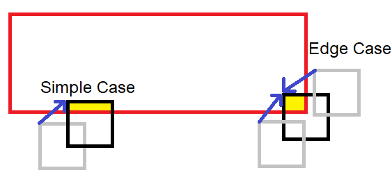

Project Lessons
- Lesson 0: Environment Setup
- Lesson 1: Introducing the Menu System/Designing a GUI
- Lesson 2: Using Git and Implementing the Menu System
- Lesson 3: Animation and Game Design
- Lesson 4: Animation and Game Design Part 2
- Lesson 5: Finishing the Game
Introduction: Welcome to the lessons page of the Virtual Arcade System Software Project! This poject is a great opportunity to apply object oriented programming in C++. If you are a beginner, don't worry! These lessons will help guide you through the process of building this project.
Note: This project does not assume any prior programming experience. However, this is not an easy project and may require you to spend time reading through these lessons and other resources I have linked if you have little to no programming experience.
Lesson 0: Environment setup (completion time: 15 min - 45min)
For terms or concepts that may require additional explanation, I have provided clickable links to simple articles that provide more detail.Overview: Before we do anything, we need to set up an environment in which we can program in. This step is very important, so please read and follow every instruction carefully. This setup can be very frustrating if you miss a step or something goes wrong so please be patient and email me with any questions.
1. Downloading a code editor
No matter what language you use, when building a software project you need an environment where you can write code. For this project we will be using Visual Studio Code which is a free code editor with tools and extensions that will help us build our project. Follow this link and download the according version (Windows or Mac).- On Windows, an installation setup wizard should pop up (if not it will appear as something similar to "VSCodeUserSetup-x64-1.38.1.exe" in your downloads folder, double click it). Just hit next through the setup and leave the default settings unless you want to configure the installation in a certain way.
- On Mac it should show up in your downloads as a .zip. Double click on this to extract the archive. Move the Visual Studio Code application into your applications folder and then open up the app.
2. Configuring Visual Studio Code for C++
After installing Visual Studio Code we need to configure it so that we can develop in C++. Open it up if you haven't already and click the extensions icon (under the debug icon) in the left side bar. Search for C++, click the first extension, and install it as shown in this image. This extension helps us write C++ code but does not come with a C++ compiler.
A compiler is a program that takes our C++ code and translates it into lower level "object code" which we will use to make an executable program. For a better explanation of a compiler click here. Setting up Visual Studio Code with a C++
compiler will be different based on your OS so follow the steps based on your computer.
This extension helps us write C++ code but does not come with a C++ compiler.
A compiler is a program that takes our C++ code and translates it into lower level "object code" which we will use to make an executable program. For a better explanation of a compiler click here. Setting up Visual Studio Code with a C++
compiler will be different based on your OS so follow the steps based on your computer.
3. Setting up Visual Studio Code with a C++ compiler
Windows
 Unfortunately Windows does not come with a C++ compiler so we will need to download some extra tools. We will be downloading MinGW which comes with a compiler, debugger, and a make utility, which we need to build this project.
Unfortunately Windows does not come with a C++ compiler so we will need to download some extra tools. We will be downloading MinGW which comes with a compiler, debugger, and a make utility, which we need to build this project.
- Download it at this link. After it downloads double click on the installer which should say something like "mingw-w64-install.exe" (check your downloads folder if it doesn't pop up and double click it like before).
- Click next through the installer setup and when you get to the "Installation folder" section as shown to the right, change the path to C:\MinGW. Continue through the rest of the setup and wait for it to install.
- Next we need to add the MinGW "bin" folder's path to our PATH variable so that we can access the tools from any directory.
What is the PATH variable? Note: "path" vs "path variable". "path" typically refers to a location in a file system like "C:\Users\userOne\Documents\file.txt"
Follow these five steps which each reference the five images below.- search environment in the windows search bar and select "Edit the system environment variables"
- Click the "Environment Variables" button
- Then click the "path" row under "System Variables" and click the "edit" button
- Finally click the "New" button and type "C:\MinGW\mingw32\bin". Then click "ok" on all the open tabs.
- To test if you configured the PATH variable correctly, open the command prompt (search cmd in the windows search bar) and type "g++". You should get something like: "g++: fatal error: no input files compilation terminated."
Setting up MinGW


Setting up Visual Studio Code with g++ (still windows)
Now we need to configure Visual Studio Code with the C++ compiler g++ that comes with MinGW by editing a properties file. However, first we must create and open a folder where we want these configuration settings to take effect.- create a new folder on your computer, then in VS Code go to File->Open Folder and open that folder
- Now go to the Command pallete by clicking View -> Command Pallette or CTRL + SHIFT + P.
- In the search bar type C++ and click the "Edit Configurations (UI)" option. A new tab will open called C/C++ Configurations.
- Scroll down to the "Compiler Path" section and type "C:/MinGW/mingw32/bin/g++" in with the quotes.
- Under intelliSense mode choose "gcc-x64".
Testing if C++ works with Visual Studio Code on Windows
Our environment is finally setup for C++ so let's check it to make sure it works.- Go to File -> New File. Save with CTRL + S and it will prompt you to name it, save as test.cpp
- Copy and paste the following code:
#include <iostream> using namespace std; int main() { cout << "If this prints then you have set up C++ correctly!"; return 0; } - Go to Terminal -> New Terminal, press enter, and type the following commands:
This image is what it should look like. If you get an error and can't figure it out please email me or come to my office hour.g++ -o test test.cpp .\test
MAC
Fortunately, setting up C++ to compile on a Mac is much easier than Windows because Mac has an easy way to install "command line developer tools" which will provide us with utilities like clang (C++ compiler) and Make.
Downloading command line developer tools on Mac
- open the search by using Command + Space. Type in "Terminal" and press enter to open it up
- In the terminal install the Command line tools with the command "xcode-select --install" Make sure you only install the tools and NOT xcode.
- Now type clang and make sure you get something like "$ clang: error: no input files"
Configuring Visual Studio Code with g++
- First we need to set up Visual Studio Code to open from the command line. In VS code use CTRL + SHIFT + P to open up the command pallete or go to View -> Command Pallete
- Now type Shell and select "Shell Command: Install 'code' command in PATH." After it installs close VS code.
- Now open up the terminal if you closed it and type "mkdir testFolder" to make a new folder. Enter that folder by typing "cd testFolder". Finally type "Code ." to open up this folder in VS Code.
-
Open the command pallette like before and type C++ and select "Edit Configurations (UI)". A new tab called C/C++ Configurations will open up. In this tab scroll down to "compiler path" and paste "/usr/bin/clang". Also make sure intellisense is "clang-x64" as shown.

- C++ is finally configured! Now let's test to make sure it works.
Testing C++ on MAC
Go to File -> New File. Save with CTRL + S and it will prompt you to name it, save as test.cpp#include <iostream>
using namespace std;
int main()
{
cout << "If this prints then you have set up C++ correctly!";
return 0;
}
g++ -o test test.cpp
./test

4. Managing a new project using Git and linking to the SDL2 library
Now that we have our code editor working with C++ we can start a project. When creating mid to large size programming projects with multiple files, we want to manage our code with a tool called Git and save our code online using a site called Github.- Git is known as a version control system and it is used to manage software in a container called a repository. For example, say you make some changes to working code and break it. Using Git, you can see every change and undo them if necessary. More on this later.
- Github on the other hand is a service to store and manage your Git repositories online.
I have created a repository (basically a directory to store a project) on github with some base code which we will build off of. This base code includes build tasks, the SDL2 library, and a small set of classes I created to help create a simple menu system. What we will be doing is copying the base code into a local directory on your computer and start from there.
- first download git if you don't have it already from this link. In the installation wizard just click next through all the steps and install it.
- next, create an account on github if you don't have one already from this link
- The next thing we need to do is configure git with our information. Type these commands into the command prompt (terminal) with your name and email. git config --global user.name "firstName lastName" git config --global user.email "email@website.com"
-
Now that git is configured let's copy the base code to your local computer from github. Open the command prompt (terminal)
and navigate to a location where you want to save your project. This may be documents, desktop, or anywhere else you
want. Once in the location you want type this command:
- Windows: "git clone https://github.com/geffencooper/ArcadeSystem_windows.git"
- Mac: "git clone https://github.com/geffencooper/ArcadeSystem_mac.git"
- Now type "cd ArcadeSystem_windows" or "cd ArcadeSystem_mac", and then type "dir" if on Windows and "ls" if on Mac. You should see the following folders: GUI_files, SDL_files, source
cd SDL_files
/usr/bin/ruby -e "$(curl -fsSL https://raw.githubusercontent.com/Homebrew/install/master/install)"
brew install SDL2 SDl2_image SDL2_ttf SDl2_mixer
cp -R /usr/local/Cellar/sdl2/2.0.10/include/SDL2/ include/
cp -R /usr/local/Cellar/sdl2/2.0.10/lib/ lib/
cp -R /usr/local/Cellar/sdl2_image/2.0.5/include/SDL2/ include/
cp -R /usr/local/Cellar/sdl2_image/2.0.5/lib/ lib/
cp -R /usr/local/Cellar/sdl2_ttf/2.0.15/include/SDL2/ include/
cp -R /usr/local/Cellar/sdl2_ttf/2.0.15/lib/ lib/
cp -R /usr/local/Cellar/sdl2_mixer/2.0.4/include/SDL2/ include/
cp -R /usr/local/Cellar/sdl2_mixer/2.0.4/lib/ lib/
5. Testing to see if SDL2 works
- Open up Visual Studio code and go to File->Open Folder and open the according folder, "ArcadeSystem_windows" or "ArcadeSystem_mac"
-
Now use "CTRL (CMND on Mac) + SHIFT + B" to bring up a build task drop down. It should look like the following picture

- select "build all". Then type "CTRL (CMND on Mac) + SHIFT + B" and select "run ArcadeSystem"
-
you should get a blank window that says ArcadeSystem at the top as shown

- That's it!
Congradulations! You finished the environment setup. This is one of the more difficult and frustrating parts of building software projects so don't get discouraged, the rest of the project is much more fun.
Lesson 1: Introducing the Menu System/Designing a GUI
Before getting into the design, watch this video for a demo of what the Arcade System will look like.
Intro
For this project, the goal is to provide you with something which you can expand on so we will be building a "base" version of the Arcade System with a simple menu system, one game (brick breaker), and some music. At the end, you will have the knowledge and opportunity to customize your Arcade by building your own games and adding your own images and music.
Designing a GUI
What is a GUI A GUI is a "Graphical User Interface" and is the way we interact with a program. We will go through the steps of designing a simple GUI that will be used to interact with our arcade system. However, due to time constraints we will not be programming this GUI from scratch. Instead we will just implement some files that I created to help program the GUI. This image here on the right shows a visual of the GUI we will be making.
High Level Design
 How do we go about desiging a menu system from scratch?
How do we go about desiging a menu system from scratch?
- When building a multi file project, you don't want to start coding right away or you will end up with a bunch of messy code with no organization. The first step is to start with the high level logic and design. Start with a sketch or diagram of what you want your program to look like or how it might work. This image on the right is one of the early diagrams I made and represents a vision of what I wanted the arcade system to look like.
- The next step is to take the specific image or vision and generalize it a bit and break it down into components so that we can begin thinking in more of a programmatic way which makes the transition from design to implementation more fluid. Essentially, we want to take our design and consider how we can create some structure from it. Consider this generalized diagram on the right. What does it resemble? It resembles a tree-like structure right. Now using this more generic diagram let's think about the structure of a tree. A tree starts with what we call the "root" and expands out into what we call "Nodes." Nodes are basically discrete points that hold data and are linked together to form the tree. Each box in the diagram is a node.
Being more explicit with our design
 The next step is to get more explicit with our tree structure and start to define some rules and attributes.
In our tree structure we will define something called the Node->Screen->Button hierarchy which basically are
the three tiers of our menu system.
The next step is to get more explicit with our tree structure and start to define some rules and attributes.
In our tree structure we will define something called the Node->Screen->Button hierarchy which basically are
the three tiers of our menu system.
- Node: The node represents an organizational unit in our menu system and does not really do anything more. Its role will become more clear but in general we can say that a node is a collection of screens.
- Screen: The screen represents the guts of the node and is where all the action happens. The top level user will be unaware of the nodes and will only interact with the screens. The screen also holds a list of buttons.
- Button: The button is what facilitates movement through the tree and is what actually links screens to screens and nodes to nodes.
- parent-child relationship of nodes: We also need to define the connections between nodes. In this tree we are going to keep things simple and say that every "parent" node can have multiple "child" nodes, but every "child" node can only have one parent. Basically, every node can branch out into multiple nodes, but each node can only link to one node above itself. This way we avoid having loops in our tree.
Transitioning from design to implementation
So now that we have a good idea of how our menu system is designed, let's go into the details of implementation because this design needs to be described in code. So how do we do that? How do we take these attributes and rules that we used to describe our tree structure and make them into code? We use classes and create objectsWe have already categorized our design into distinct parts that we can visualize (Node, Screen, Button) and described them. Now we can take all the attributes and behaviors we associated with these parts and bundle them up into units which we call objects. For a quick intro about classes and objects in C++ click this link
 For example, if we want to do something in our tree like move screens or play music how do we do that? We use the buttons. We can bundle up a set of attributes and behaviors associated with actions into a button object.
For example, if we want to do something in our tree like move screens or play music how do we do that? We use the buttons. We can bundle up a set of attributes and behaviors associated with actions into a button object.
- In addition, we can bundle up the set of attributes and behaviors associated with the structure of our tree into screen and node objects
- So essentially in C++, an object is a unit that bundles up a set of attributes and behaviors. It is also helpful to think about objects in C++ as real life objects, so for example take a look at these classes to the right which are blueprints to define objects.
-
Note how I described objects in two different ways
- We can take a real life object and describe its behaviors and attributes so that we can implement it as a construct in our program
- Or we can take some high level abstract design and split it up into bundles of behaviors and attributes and form objects These are just two ways you can think about objects
Defining the Node, Screen, and Button Classes
I highly reccomend looking through "Button.h", "Screen.h", and "Node.h" in the GUI_files->headers folder inside our project folder. These files define a generic Button, Screen, and Node class. In summary:
- Button Attributes: width, height, x position, y position Button Methods: Accessors, mutators, update, render What are accessors and mutators
- Screen Attributes: list of ArcadeTexture objects Screen Methods: Accessors, mutators, update, render
- Node Attributes: currentScreen object, list of screen objects, parent node object, renderer object Node Methods: Accessors, mutators, update, render
Inheritance
This gives us the flexibility to create different types of buttons or screens or nodes that share the same general attributes but behave in a specific way through inheritance. For a good explanation of inheritance in C++ read this article So what I have done is inherited from the button class to create two different buttons (SimpleButton and OptionsButton) and inherited from the screen class to create two different screens (MenuScreen and GameScreen). You can see these in the GUI_files->headers folder.Understanding the GUI loop
So before we can start using the button, screen, and node objects to build our menu system we first have to understand how a GUI loop works. A GUI loop is just a series of three steps that our program follows:- Handle Input: First we want our GUI to track any user events such as mouse movement or keystrokes. We want our menu system to be able to react to these events accordingly
- Update: Next we need our GUI to update the states or values of certain variables based on te user input. For example, if the user move their mouse over a button we want to update the state of that button to "selected."
- Render: Rendering just means painting to the screen. So for example, our button state was updated to selected so now when we render that button it will be rendered with some opacity to show that it is selcted.
int main(int argc, char* argv[])
{
// initialize resources we need like the window
if (!init())
{
printf("Failed to initialize!\n");
}
// if initializes successfully then continue
else
{
// we want to run the gui loop until the user quits
bool quit = false;
// here we create the first node for our menu system
RootNode currentNode(arcadeSystemRenderer, nullptr);
// ---------------THE GUI LOOP
while (!quit)
{
// handle all user events until there are none left
SDL_Event e;
while (SDL_PollEvent(&e) != 0)
{
// update the current node
currentNode.update(&e);
// user requests quit by clicking window X
if (e.type == SDL_QUIT)
{
quit = true;
}
}
currentNode.update(nullptr);
// render the current node
currentNode.render(arcadeSystemRenderer);
SDL_RenderPresent(arcadeSystemRenderer);
}
}
The GUI works like this
- Before going into the loop, create the first node in the menu system. We hold it in a variable called currentNode because we only care about updating and rendering the current node. There is no point in updating and rendering the other nodes if we aren't using them.
- Now we enter the loop and run it until the user wants to quit
- Next we check for user events and pass them to the current node until there are no events left. When we update the currentNode it will call update for the currentSceen (again we only care about the current screen) which will check if a button is selected or not.
- If there are no events we still want to update the current node but just pass in no event
- Finally we render the node to the screen. Node will render the current screen, which will render all its ArcadeTexture objects and all its buttons.
conclusion
That was a lot of information so don't worry if a lot of it didn't make sense. Next class we will be going over how to actually use these objects to create a menu system. One important concept to remember is abstraction, it is not critical to understand how button, screen, and node work under the hood but rather it is important to know how to use them because at the end of the day we just want to build the menu system. For example, its good to understand how a car generally works but you don't need to understand all the details of how it works under the hood in order to use it. In this case I have implemented the GUI classes for you and abstracted all the details away by providing a set of methods (we will learn these next class) for you to use to build a menu.
Lesson 2: Using Git and implementing the menu system
Exploring the project directory
Before we start coding let's take a look at our project directory which we copied from github in lesson 0. This image on the right shows what our project directory (also our git repository) looks like.
-
.git: This folder signfies that "ArcadeSystem_windows" is a git repository so any changes made will be identified by git. We won't open or change this folder directly.
-
.vscode: This folder stores configuration settings. It has files that specify things like the compiler path, include paths, build tasks, debugger settings.
The "build arcadeSystem" task we call to compile our code is defined here.
We won't open or change this folder.
-
GUI_files: This folder has all the classes and files necessary to build the menu system. The Node, Screen, and Button classes can be found in "GUI_files->headers"
if you are curious.
We will be using these files and possibly opening them but we will not change them.
-
SDL_files: This folder has files we need from the SDL2 library. These files are basically just a bunch of functions we can use to do things like detect keystrokes or put images on the screen.
We will not change or open this folder.
-
source: This folder is where all our resources (images and fonts) and source code (the C++ files we will make) for our project are located.
This is really the only folder you need to interact with. You can think of all the other folders as tools we need to help us build our project and
this source folder is where all the action happens and where the tools are used.
Using Git
Next we need to learn a little bit about git. If you remember from lesson 0 and read the articles, git is a version control system (basically a tool that helps us manage our code). We will be using it to track our code and also to publish it to a remote repository on your github account. You can think of github as a powerful version of google drive that is specifically for software.
Seeing git in action
To understand what git does, it is useful to see it in action. These three images below show a succession of events.
1. Start with some code
2. Change or add to the code
3. Seeing the changes identified by git (left side is visual git interfce, right side is git command line interface)

 What we are seeing in the images in part three is git recognizing Main.cpp has been changed. You can interact with git through a visual interface or
a command line interface. In the command line interface we use the commands git status to check the current state of our repository and git diff to see what we changed.
What we are seeing in the images in part three is git recognizing Main.cpp has been changed. You can interact with git through a visual interface or
a command line interface. In the command line interface we use the commands git status to check the current state of our repository and git diff to see what we changed.
Now that we have an idea of what git does, let's learn how it works and how to use it. Currently our files are part of a git repository. A repository is just a storage space where a project sits in. What makes it a git repository is that we have the .git folder which tracks all our changes and builds a history of our project that we can easily access and interact with.
Files in our project directory can be in different states: untracked, modified, staged, and committed.
-
 Untracked: files that are in our directory but are not tracked by the git repository.
Note: just because a file is in a directory with a .git folder does not mean it is tracked. For example, I created a new file
called test.cpp in the project directory. When I run the command git status it tells me the file is untracked. To start tracking it I use git add file
Untracked: files that are in our directory but are not tracked by the git repository.
Note: just because a file is in a directory with a .git folder does not mean it is tracked. For example, I created a new file
called test.cpp in the project directory. When I run the command git status it tells me the file is untracked. To start tracking it I use git add file
-
 Modified: files that are being tracked by the git repository and have changed since the last time we "commited" (saved our changes) or since tracking them by adding them to the git repo.
Modified: files that are being tracked by the git repository and have changed since the last time we "commited" (saved our changes) or since tracking them by adding them to the git repo.
What we see in this image are two things.- We start tracking test.cpp by adding it to the git repo with git add. This is seen by git status showing "new file". On the left we have it in "staged changes" which shows any changes that we "added" to the git repo. .
- We modify test.cpp by typing a comment. When we view "Changes" in the left we see the before and after at the top. git status shows the first change (adding test.cpp to the directory) is "added" and ready to be "committed" (saved) but the second change (modifying test.cpp with a comment) has not been "added" and is not ready to be committed (saved). Changes that we want to keep must be "added" with git add. A change that is "added" is ready to be commited (saved) but is not saved yet.
- Staged: changes that we make in our directory that we want to eventually "commit" or save. We use the git add file command. When we uses git status, these "staged" or "added" files that we changed will be green not red meaning that they are ready to be saved.
- Committed: changes that are safely saved and stored in our git repository. This is shown in the image. Every time we commit we must put a message with it. A commit is like a checkpoint in our project and signifies a series of changes.
 The whole process is summed up by this diagram which shows the different states of files. So for "test.cpp" we started as
untracked when we first added it to the directory. Then it became tracked, unmodified, and staged when
we used git add. Then it went to modified when we put a comment in the file. At this point the original empty file was staged but the
comment was not staged so if we committed the file then only the blank file would be saved. Finally, we added the change and committed it which
puts it back at the unmodified state.
The whole process is summed up by this diagram which shows the different states of files. So for "test.cpp" we started as
untracked when we first added it to the directory. Then it became tracked, unmodified, and staged when
we used git add. Then it went to modified when we put a comment in the file. At this point the original empty file was staged but the
comment was not staged so if we committed the file then only the blank file would be saved. Finally, we added the change and committed it which
puts it back at the unmodified state.
This may seem confusing as there are nuances between what each of these states really means. Basically all you need to worry about is git add and git commit. The visual git interface is very useful if you don't have experience with git or want and easy way to see what is going on without needing to use the other git commands. This interface let's you see all the changes you made to each file.
setting up a remote repository
Everything we have talked about up until now regarding git has been "locally". By this I mean we have only been using git to track and save changes on your local computer, not online or another computer (With exception to lesson 0 when did use git to clone the repo from online). What we will be talking about now is how to link your local git repository to a repository online using GitHub.In git, remote repositories are versions of our project that are hosted somewhere else, in this case on GitHub. Because we cloned our repo from my GitHub, we automatically have this as one of our remote repos. By default this remote repo is called "origin". We will add another remote repo from your Github so you can not only save your changes online but also copy changes from my repo if necessary.
- First, we need make a new repository on github. Login to your github account online and click the + symbol in the top right and then "new repository." Name your repository whatever you want like yourNameArcade and click "create repository." In the next window select HTTPS and copy the url. Look at the three images above as a reference.
- Next, we want to change the name of our current remote repo from "origin" to "upstream" so that we know it is the original source.
In visual studio code, open the terminal and type:git remote rename origin upstream -
Now we need to add a remote repo called origin and link it to the repo we just created in github. In the same terminal session
type this command
git add remote origin URL to your repoexample URL: https://github.com/geffencooper/geffenArcade.git -
Finally, we want to "push" or send our current git repository with all our files to this remote repo. In the same terminal window type:
git push origin master. To check that it worked, go to your github and refresh the page, it should have our project in there. -
the image below shows the steps. When I type
git remote -vit prints out the urls of each remote repo. You can do this as a check to make sure the upstream is my repo and origin is your repo.


That's it for git we can now start coding. This setup can be confusing if it is your first time so please do not hesitate to email me with questions at any time. Please also come to my office hour if you need help.
implementing the menu system
Before we do anything, I added a new build task to make things easier. To get this new build task, go to the terminal in visual studio code as we have done before and typegit pull upstream master
I am going to go through a basic example of how to use the methods and classes I provided. For the full code for the menu system I made a repo on GitHub and have the link at the bottom of this lesson. The repo has a ReadMe with information on how to use and set up the code.
Step 1: Creating a new node
The first step to implementing the menu system is creating a new node. If you recall our menu system is a tree of nodes. To do this create a new file called "RootNode.h" in the source directory of the project. Do this by right-clicking source and then clicking new file as sown in the image.This is the code for a basic rootNode that flips between two screens when you click a button.
Copy-paste this into your RootNode.h. Also, below this is code you need for "Main.cpp". I will dissect the code in detail below.
// RootNode // include the files we need #include "Node.h" #include "Config.h" #include "MenuScreen.h" #include "SimpleButton.h" class RootNode : public Node // publicly inherits from Node { public: // Constructor // initializer list RootNode(SDL_Renderer* renderer_in, Node* parentNode_in): Node(renderer_in, parentNode_in) { // first create screens for the node MenuScreen* screen1 = createMenuScreen(); MenuScreen* screen2 = createMenuScreen(); // create images and text to put on the screen using an ArcadeTexture object ArcadeTexture* screen1Background = createImage(renderer_in, "rootNodeImages/rootNodeScreenBackground.png", true); ArcadeTexture* screen2Background = createImage(renderer_in, "rootNodeImages/rootNodeScreenBackground.png", true); ArcadeTexture* screen1Text = createSimpleText(renderer_in, "fonts/retro/italic.ttf", 100, "screen 1", 255, 255, 0); screen1Text->setPosition(windowWidth / 2 - screen1Text->getW() / 2, 25); ArcadeTexture* screen2Text = createSimpleText(renderer_in, "fonts/retro/italic.ttf", 100, "screen 2", 255, 255, 0); screen2Text->setPosition(windowWidth / 2 - screen2Text->getW() / 2, 25); // add the images and text to the screen after creating them screen1->addTextureToScreen(screen1Background); screen1->addTextureToScreen(screen1Text); screen2->addTextureToScreen(screen2Background); screen2->addTextureToScreen(screen2Text); // make a text button to put on the screen1 SimpleButton* button1 = createSimpleTextButton(renderer_in, "fonts/pixel/classic.ttf", 30, "gotoscreen2", 255, 0, 0); button1->setButtonPosition(windowWidth / 2 - button1->getWidth() / 2, screen1Text->getY() + screen1Text->getH() + 50); // give this button an action button1->setButtonAction(createAction(MOVE_SCREENS, screen2)); // make a text button to put on the screen2 SimpleButton* button2 = createSimpleTextButton(renderer_in, "fonts/pixel/classic.ttf", 30, "gotoscreen1", 255, 0, 0); button2->setButtonPosition(windowWidth / 2 - button2->getWidth() / 2, screen2Text->getY() + screen2Text->getH() + 50); // give this button an action button2->setButtonAction(createAction(MOVE_SCREENS, screen1)); // add the buttons to their screens screen1->addButtonToScreen(button1); screen2->addButtonToScreen(button2); // add the screens to the node this->addScreen(screen1); this->addScreen(screen2); // tell the node the current screen this->setCurrentScreen(screen1); } };
Code for Main.cpp. Copy-paste this into your Main.cpp.
Then type CTRL (CMDN on Mac) + SHIFT + B and run these tasks: "build arcadeSystem" then "run arcadeSystem". Note: There might be some red squiggly lines saying your code has errors, try running the tasks anyways because VS code can be a bit delayed and not recognize some references. If you change the code and want to recompile it run the tasks "recompile arcadeSystem" then "run arcadeSystem".IMPORTANT: Once you copy these files to your project and get them working, we need to add, commit, and push them with git so that you can have a working version saved. This way when you make changes and additions you will be able to see and go back to the working version when it breaks. See the picture at the bottom for how to do this.
// main.cpp #include "SDL.h" #include "SDL_mixer.h" #include "SDL_ttf.h" #include "SDL_image.h" #include "Config.h" #include <stdio.h> #include "RootNode.h" // declaring pointer to objects that main needs, initialize to null // these objects are created in main because they are needed for the outermost loop SDL_Window* arcadeSystemWindow = nullptr; SDL_Renderer* arcadeSystemRenderer = nullptr; TTF_Font* font = nullptr; // initialization function, initializes above objects and calls some SDL initialization functions bool init() { // Initialization flag bool success = true; // Initialize SDL if (SDL_Init(SDL_INIT_VIDEO | SDL_INIT_AUDIO) < 0) { printf("SDL could not initialize! SDL Error: %s\n", SDL_GetError()); success = false; } else { // Create window in the center of the screen arcadeSystemWindow = SDL_CreateWindow("Arcade System", SDL_WINDOWPOS_UNDEFINED, SDL_WINDOWPOS_UNDEFINED, windowWidth, windowHeight, SDL_WINDOW_SHOWN); if (arcadeSystemWindow == NULL) { printf("Window could not be created! SDL Error: %s\n", SDL_GetError()); success = false; } else { // initialize renderer, set the background as white for the wwindow, sync the renderer with the monitor refresh rate arcadeSystemRenderer = SDL_CreateRenderer(arcadeSystemWindow, -1, SDL_RENDERER_ACCELERATED | SDL_RENDERER_PRESENTVSYNC); SDL_SetRenderDrawColor(arcadeSystemRenderer, 0xFF, 0xFF, 0xFF, 0xFF); } // Initialize SDL_mixer if (Mix_OpenAudio(44100, MIX_DEFAULT_FORMAT, 2, 2048) < 0) { printf("SDL_mixer could not initialize! SDL_mixer Error: %s\n", Mix_GetError()); success = false; } // initialize true type font if (TTF_Init() == -1) { printf("SDL_ttf could not initialize! SDL_ttf Error: %s\n", TTF_GetError()); success = false; } } return success; } int main(int argc, char* argv[]) { // first call initialization if (!init()) { printf("Failed to initialize!\n"); } // if initializes successfully then continue else { bool quit = false; RootNode currentNode(arcadeSystemRenderer, nullptr); while (!quit) { // handle events on queue until empty SDL_Event e; while (SDL_PollEvent(&e) != 0) { currentNode.update(&e); // user requests quit by clicking window X if (e.type == SDL_QUIT) { quit = true; } } currentNode.update(nullptr); currentNode.render(arcadeSystemRenderer); SDL_RenderPresent(arcadeSystemRenderer); } } return 0; }
When running you should see this screen and be able to flip to the next screen using the button.

How to add, commit, and push using git
Type theses commands when you get your code working.git add . then git commit -m"working version" then git push origin master You should see these additions in your GitHub account.

Dissecting the code
Main.cpp
All C++ programs start their execution from the method "main()" so let's start from the file Main.cpp where the function "main" sits.This is the first chunk of code we see in the file Main.cpp
// main.cpp #include "SDL.h" #include "SDL_mixer.h" #include "SDL_ttf.h" #include "SDL_image.h" #include "Config.h" #include <stdio.h> #include "RootNode.h"
This next chunk of code is an initialization function that we don't have to worry about
This code just calls some functions that SDL provides us to create a window, a renderer, and make sure that our resources are working.// declaring pointer to objects that main needs, initialize to null // these objects are created in main because they are needed for the outermost loop SDL_Window* arcadeSystemWindow = nullptr; SDL_Renderer* arcadeSystemRenderer = nullptr; TTF_Font* font = nullptr; // initialization function, initializes above objects and calls some SDL initialization functions bool init() { // Initialization flag bool success = true; // Initialize SDL if (SDL_Init(SDL_INIT_VIDEO | SDL_INIT_AUDIO) < 0) { printf("SDL could not initialize! SDL Error: %s\n", SDL_GetError()); success = false; } else { // Create window in the center of the screen arcadeSystemWindow = SDL_CreateWindow("Arcade System", SDL_WINDOWPOS_UNDEFINED, SDL_WINDOWPOS_UNDEFINED, windowWidth, windowHeight, SDL_WINDOW_SHOWN); if (arcadeSystemWindow == NULL) { printf("Window could not be created! SDL Error: %s\n", SDL_GetError()); success = false; } else { // initialize renderer, set the background as white for the wwindow, sync the renderer with the monitor refresh rate arcadeSystemRenderer = SDL_CreateRenderer(arcadeSystemWindow, -1, SDL_RENDERER_ACCELERATED | SDL_RENDERER_PRESENTVSYNC); SDL_SetRenderDrawColor(arcadeSystemRenderer, 0xFF, 0xFF, 0xFF, 0xFF); } // Initialize SDL_mixer if (Mix_OpenAudio(44100, MIX_DEFAULT_FORMAT, 2, 2048) < 0) { printf("SDL_mixer could not initialize! SDL_mixer Error: %s\n", Mix_GetError()); success = false; } // initialize true type font if (TTF_Init() == -1) { printf("SDL_ttf could not initialize! SDL_ttf Error: %s\n", TTF_GetError()); success = false; } } return success; }
This final chunk of code is what we care about and is where all the action happens
int main(int argc, char* argv[]) { // first call initialization if (!init()) { printf("Failed to initialize!\n"); } // if initializes successfully then continue else { bool quit = false; RootNode currentNode(arcadeSystemRenderer, nullptr); while (!quit) { // handle events on queue until empty SDL_Event e; while (SDL_PollEvent(&e) != 0) { currentNode.update(&e); // user requests quit by clicking window X if (e.type == SDL_QUIT) { quit = true; } } currentNode.update(nullptr); currentNode.render(arcadeSystemRenderer); SDL_RenderPresent(arcadeSystemRenderer); } } return 0; }
First we call the initialization function which returns true or false. The "!" is the negation operator and gives us the opposite of the value to the right of it. So here if the function init() returns false the value becomes true and we enter the if statement.
// first call initialization if (!init()) { printf("Failed to initialize!\n"); }
If the function returns true then the value becomes false and we skip over the if statement and enter this else statement. This is our GUI loop. This chunk of code is the essence of our program. Before entering the loop we do two things, 1. create a variable to store the state of our program (is it running or did we quit) and 2. We create the first node called currentNode.
else { bool quit = false; RootNode currentNode(arcadeSystemRenderer, nullptr); while (!quit) { // handle events on queue until empty SDL_Event e; while (SDL_PollEvent(&e) != 0) { currentNode.update(&e); // user requests quit by clicking window X if (e.type == SDL_QUIT) { quit = true; } } currentNode.update(nullptr); currentNode.render(arcadeSystemRenderer); SDL_RenderPresent(arcadeSystemRenderer); } }
- Create an event object to store the latest event that happens
- While events (mouse clicks, keystrokes) are still happening handle those events. We handle an event by passing it to the current node in this case it is the RootNode and telling it to update by calling its update function with the latest event. This update function will update the current screen which will check to see if a button is hovered on or clicked on. Next we want to check if the lastest event was to quit (this happens by closing the window).
- Once all events are processed we exit the inner while loop. We then call update for the current node again so that if no events happen, it will still update (this will be more useful later when we have games).
- Finally, we render the currentNode which will render the current screen which will render all the images, texts, and buttons it has. RenderPresent is the final step and is what actually prints to the screen.
RootNode.h
This file is where our menu system is implemented.This first chunk has the same purpose as in Main.cpp, we need these files to build the components of our menu
// RootNode // include the files we need #include "Node.h" #include "Config.h" #include "MenuScreen.h" #include "SimpleButton.h"
This next chunk is how we begin defining a new Node
class RootNode : public Node // publicly inherits from Node { public: // Constructor // initializer list RootNode(SDL_Renderer* renderer_in, Node* parentNode_in): Node(renderer_in, parentNode_in) {
RootNode currentNode(arcadeSystemRenderer, nullptr);, this constructor was called which
will initialize the node. Don't worry about the "initializer list", it is just saying we want to set this node's renderer and parent node to the values passed in.
Everything inside the curly braces of the constructor will be executed as follows
// first create screens for the node MenuScreen* screen1 = createMenuScreen(); MenuScreen* screen2 = createMenuScreen();
createMenuScreen() function. This function returns what is called a "pointer" to
the menuScreens. A pointer is just a variable we can use to access these objects. If you want to know more about pointers read this.
If you are curious as to why we are using pointers to the objects instead of the objects themselves first read this. After
reading about pointers and stack vs heap you should some insight into how our C++ program is stored in memory. The reason I have pointers to objects is because
I am creating these objects on the heap so I can only access them through pointers. The details of why I have these objects on the heap is beyond the scope of this project but
if you are curious you can ask me through email or my office hour.
This is a lot of information so don't worry if it is confusing. You mainly need to worry about how to use the methods, not so much why.
creating images and text to put on the screen
// create images and text to put on the screen using an ArcadeTexture object ArcadeTexture* screen1Background = createImage(renderer_in, "rootNodeImages/rootNodeScreenBackground.png", true); ArcadeTexture* screen2Background = createImage(renderer_in, "rootNodeImages/rootNodeScreenBackground.png", true); ArcadeTexture* screen1Text = createSimpleText(renderer_in, "fonts/retro/italic.ttf", 100, "screen 1", 255, 255, 0); screen1Text->setPosition(windowWidth / 2 - screen1Text->getW() / 2, 25); ArcadeTexture* screen2Text = createSimpleText(renderer_in, "fonts/retro/italic.ttf", 100, "screen 2", 255, 255, 0); screen2Text->setPosition(windowWidth / 2 - screen2Text->getW() / 2, 25);
createSimpleText(renderer, file path to image, true or false if want image to fill the screen)
createImage(renderer, file path to font, font size,text to display, font color R value, G value, B value)
We also need to set the x,y position of the text, the images automatically have their position set because they fill the screen.
Now we need to add these images and text to the according screen
// add the images and text to the screen after creating them screen1->addTextureToScreen(screen1Background); screen1->addTextureToScreen(screen1Text); screen2->addTextureToScreen(screen2Background); screen2->addTextureToScreen(screen2Text);
Next we will create buttons. Buttons are just images or text that have an action associated with them
// make a text button to put on the screen1 SimpleButton* button1 = createSimpleTextButton(renderer_in, "fonts/pixel/classic.ttf", 30, "gotoscreen2", 255, 0, 0); button1->setButtonPosition(windowWidth / 2 - button1->getWidth() / 2, screen1Text->getY() + screen1Text->getH() + 50); // make a text button to put on the screen1 SimpleButton* button2 = createSimpleTextButton(renderer_in, "fonts/pixel/classic.ttf", 30, "gotoscreen1", 255, 0, 0); button2->setButtonPosition(windowWidth / 2 - button2->getWidth() / 2, screen2Text->getY() + screen2Text->getH() + 50);
Now we will add actions to the buttons.
// give this button an action button1->setButtonAction(createAction(MOVE_SCREENS, screen2)); // give this button an action button2->setButtonAction(createAction(MOVE_SCREENS, screen1));
A little explanation about button actions: an action is composed of two things the action type and action parameter. The action type is exactly what is sounds like, it is the action you want to do such as MOVE_SCREENS. I have already predefined a set of actions for us. You can see them under GUI_files->Action.h. The action parameter is what we actually use to complete the action. So for the case of MOVE_SCREENS, the action parameter is the screen (pointer to the screen object). Don't worry about the details, just know that this is how you create and set a button action.
The final step is to add the buttons to the screens and add the screens to the node
// add the buttons to their screens screen1->addButtonToScreen(button1); screen2->addButtonToScreen(button2); // add the screens to the node this->addScreen(screen1); this->addScreen(screen2); // tell the node the current screen this->setCurrentScreen(screen1); } };
That's how we create nodes. This was a basic node. To see the full menu which is more complex click here
Once you get this code working, try changing and messing with it. See what happens. It's really difficult to understand how something works just by reading it, the best way to learn is to try it yourself. Gradually, things will start to make more sense and you will be able to customize your menu system however you want which is the most fun part!
Lesson 3: Animation and Game Design
Lessons 0-2 were mainly setup, design, and building the structure of our Arcade. With this foundation we can now expand and integrate more exciting things like animation and game design. In this lesson we will create a very simple "game" of a ball bouncing on the screen.
Animation Introduction
Before animating anything, let's do a simple overview of how animation works. Animation is essentially an optical illusion. As seen in the gif here, animation is just a rapid sequence of still images that mimic continuous motion. The reason for this illusion has to do with a concept called persistance of vision which you can read about here. Essentially, our eyes can only process a certain amount of images per second and anything higher than that is observed as continous.This is exactly what we will be doing in our program (sequence of still images). If you recall, our GUI loop run 60 times per second and each time it runs (each frame) we render some image to the screen. Every succcessive frame we move the image slightly by some amount of pixels and at 60 frames per second this is observed as continuous motion.
Game Design Introduction
So now that we have a rough idea of how animation works, let's look at how a simple game works.- In general a game is just a succession of events and interactions with some end goal.
- An event in our game will be any form of user input as well as the movement of "game objects". Interactions include collisions and any other logic or "states" that are defined by our game. For example, if a game object enters a certain region of the screen then we might want it to do something or for something to happen.
- So overall we have game objects that are part of our game and can move or stay still. Each object has its own update method that changes its state from frame to frame. This typically will just be movement but can be whatever you want it to be. Based on these updates, certain states will result in the game. For example, when a ball game object updates, it will change position. Based on this change of position certain states can occur like collision with the wall or other objects which must be recognized and handled by our game's logic. This sequence of update then game logic is seen in the image above of a simple game object.
Steps to implement our game
- The first step is to define game objects which is anything you can interact with such as obstacles, moving pieces, or the player. For our simple game the only game object will be the ball. To implement a game object in code we must create a class. I have already created a generic class called Entity that provides essential attributes and functions any game object has including size, position, velocity, etc as well as update and render functions. To create game objects we will create a class that inherits from Entity so that every game object will not only have all the essential methods and qualities already, but also they will be easy to interface with in a standardized way.
- The next step is to define our game. This includes all the logic, including colision detection, game states, and any other interactions we want to recognize. The generic outline for a game has already been implemented in a class called GameScreen. If you recall we have a generic screen class and under screen we had MenuScreen which was a collection of buttons. A GameScreen is another type of screen that implements a game. So to create a new game we will inherit from the GameScreen class so that our game will already have the essential attributes and methods and also have a standerdized interface. However, we will customize how these functions and attributes are imlemented and used enabling us to create any simple game we want.
- The final step is to create a new Node that will contain our game. If you recall from the menu system, we created buttons which were part of screens which were bundled all into a node. This is the same thing; we create game objects which are part of a GameScreen which along with other MenuScreens (like a pause screen) are bundled into a node.
Coding
Important: Before coding type "git pull upstream master" into the terminal as we did last lesson. I made some changes that you must have to get the code to work.Let's get into coding now that we have a high level understanding of how to implement a game into the structure of our arcade.
-
Defining the game object Ball
The first thing we need to do is define the Ball class for our Ball object. In C++ classes are typically separated into .h files called header files and .cpp files which are c plus plus files. The header file will contain the class defintion with function protoypes and member variables whereas the cpp file will contain the function implementation. For an example of this read this article. and this article. There are a few reasons we divide classes into headers and cpp files.- The first reason is to divide the interface of our class from the implementation. This goes back to the concept of abstraction, users of the class don't need to be concerned with the details of implementation. The headers contain the class interface and the cpp contain the implementation.
- The second reason is compile time. This is beyond the scope of the project but basically imagine if all our code was in the same file. Every time we made a change we would have to recompile all of the code which for larger projects can take several minutes. Using header and cpp files, we separate the implementation so that we only need to recompile the headers everytime which are much smaller. For example, we are using the SDL2 lirary which contains many files. Everytime we compile our code we don't recompile the entire SDL2 library, we just use the precompiled .cpp files and recompile the headers when we include them into our cpp files.
So now let's create the file Ball.h and define the ball class as shown.At the top we specifiy the file name. Next we create what are called header guards which are a set of statements to prevent us from including a header file into another file more than once which is a problem because it can cause duplicate definitions. The header guards are the #ifndef BALL_H #define BALL_H ... #endif . This means, if you have not defined BALL_H then define it and include the code between the #ifndef and #endif. If it is defined then everything below the #ifndef will be ignored. An example of multiple inclusion is let's say we have a header called functions.h that we #include in a lot of files including Main.cpp and object.h. Now let's say we include object.h into Main.cpp. Now Main.cpp has included functions.h twice, once directly, and once indirectly through objects.h. When we start having lots of files it is very difficult to keep track of these dependencies so we use header guards to prevent multiple inclusion.// Ball.h #ifndef BALL_H #define BALL_H #include "Entity.h" class Ball : public Entity { public: Ball(); void update(SDL_Event* event); }; #endif
Next we have all our resources that we need to include at the top. All we need is "Entity.h" which includes everything else we need. Finally, we define the class Ball and publicly inherit from Entity so that we get all its functions and attributes. Inside the class we create the public section. (read about public vs private here) The public section has the Ball constructor and the update method. The render method is already implemented in Entity.h. Note how these are just the function prototypes, no definitions. This class definition simply defines the interface.
Create another file called "Ball.cpp"After defining the class, we implement the functions in the .cpp file. In order to do this we must first include the header file as shown at the top so that we can access the class. Then to implement a method of the class we have to use this syntax class name :: method name. The "::" is the "scope resolution operator" and signifies that the method we are defining is part of the class on the left of the operator. So Ball::Ball means we are defining a method Ball (constructor) for the class Ball.// Ball.cpp #include "Ball.h" // constructor Ball::Ball() { setXPos(0); setYPos(0); setXVelocity(0); setYVelocity(0); } void Ball::update(SDL_Event* event) { if(event == nullptr) { setXPos(getXPos() + getXVelocity()); setYPos(getYPos() + getYVelocity()); } }
The first function we define is the constructor. Everytime we create a ball object, this method is called. Typically the constructor will initialize the member variables to some default value. Here we set all the attributes of ball to zero by default but we can change these later on.
Next we define the update method which takes in an event. If you recall, in our GUI loop we call the update method twice, the first time is if there is an event and the second time is with a nullptr just to update everything regardless. We want to update our ball every frame so we check if the event is a nullptr before updating it. If we just updated it no matter what we would get a "double update" (once when there is an event and once when there is no event) which will result in unwanteed behavior. In the update function we just move the ball by adding to its x and y position. The amount we move the ball is essentially the velocity. velocity = displacement/time and each frame is a certain amount of time so we are moving the ball some distance every ~1/60 sec which gives us the velocity. If we have x velocity as 2 then we add 2 to the position every frame which means the ball moves about 2 pixels every frame or ~ 120 pixels a second. -
Defining the game
Create a new file called SimpleGame.h.As we did with Ball.h we have the file name at the top, the header guards, then the resources to include. Next we define the class and publicly inherit from GameScreen so that we get all the essentiall attributes and functions.// SimpleGame.h #ifndef SIMPLE_GAME_H #define SIMPLE_GAME_H #include "GameScreen.h" #include "Ball.h" #include "Config.h" class SimpleGame : public GameScreen { public: SimpleGame(); Action update(SDL_Event* event); void logic(); void newGame(); //void checkCollision(); void setBall(Ball* ball_in) {ball = ball_in;} Ball* getBall() {return ball;} private: Ball* ball; }; #endif
In the private section you will see we add one attribute to this game, a ball. That is the only game object for this game. In the public section we provide the methods that we will define to create a game.- SimpleGame() = constructor
- update() = the events, rules, logic of our game
- logic() = called by the update method
- newGame() = resets the game
- getBall() and setBall() = accessor and mutator
Now create a file called SimpleGame.cpp to implement the methods of the SimpleGame classFor now we will leave the constructor empty but let's break down the update method.// SimpleGame.cpp #include "SimpleGame.h" SimpleGame::SimpleGame() { // } // game logic Action SimpleGame::update(SDL_Event* event) { // check if new game if(getIsNewGame()) { newGame(); } // create an action object Action newAction = {DO_NOTHING, nullptr}; // update all the game objects for(int i = 0; i < getMovingEntities()->size(); i++) { (*getMovingEntities())[i]->update(event); } // execute game logic logic(); // if the game state is false, end the game if(getgameState() == false) { setisNewGame(true); setGameState(true); getBall()->setXVelocity(0); getBall()->setYVelocity(0); newAction = {MOVE_SCREENS, getGameOverScreen()}; } if(event) { if((*event).key.keysym.sym == SDLK_q) { setisNewGame(true); newAction = {MOVE_NODES, getParentNode()}; return newAction; } else if((*event).key.keysym.sym == SDLK_p) { newAction = {MOVE_SCREENS, getPauseScreen()}; return newAction; } else if((*event).key.keysym.sym == SDLK_n) { setGameState(true); setisNewGame(true); } return newAction; } } void SimpleGame::newGame() { setGameState(true); ball->setXPos(0); ball->setYPos(0); ball->setXVelocity(2); ball->setYVelocity(5); setisNewGame(false); } void SimpleGame::logic() { if(getBall()->getXPos() < 0) { getBall()->setXPos(0); getBall()->setXVelocity(-(getBall()->getXVelocity())); } else if(getBall()->getYPos() < 0) { getBall()->setYPos(0); getBall()->setYVelocity(-(getBall()->getYVelocity())); } else if(getBall()->getXPos() + getBall()->getWidth() > windowWidth) { getBall()->setXPos(windowWidth - getBall()->getWidth()); getBall()->setXVelocity(-(getBall()->getXVelocity())); } else if(getBall()->getYPos() + getBall()->getHeight() > windowHeight) { getBall()->setYPos(windowHeight - getBall()->getHeight()); getBall()->setYVelocity(-(getBall()->getYVelocity())); } }
First let's look at the function signature, we have an Action as the return type and pass in an event as a parameter. If you remember, in order to move in our menu system we need actions so if we want to leave the game we need to return an action saying that.Action SimpleGame::update(SDL_Event* event) { // check if new game if(getIsNewGame()) { newGame(); } // create an action object Action newAction = {DO_NOTHING, nullptr}; // update all the game objects for(int i = 0; i < getMovingEntities()->size(); i++) { (*getMovingEntities())[i]->update(event); }
The first thing we check every update is if it is a new game. We need to do this because there is no way to inherently know if this is the first time we have called update or the 500th time. We will define the newGame() method later on.
Next we create an "empty" action object that does nothing. We will return this if we want to stay in the game.
Next we call update on all the moving game objects. The syntax is a bit wonky but basically we have a vector (a list) of game objects called movingEntities which stores all the game objects that can move. In our game we only need to update the moving objects but in other games you may choose to update static objects as well. The function getMovingEntities() returns a pointer to the vector so we must dereference it before we can index it and call update for all its members. This basically moves all our game objects for this frame.
After updating all the game objects we call the logic function to detect if any game states have been reached and to handle them accordingly. In this case our logic function is used for collision detection after the objects move each frame. We will define the logic function later on.logic(); // if the game state is false, end the game if(getgameState() == false) { setisNewGame(true); setGameState(true); getBall()->setXVelocity(0); getBall()->setYVelocity(0); newAction = {MOVE_SCREENS, getGameOverScreen()}; }
After the logic function gets called we check to see if the game is over because the logic function recognizes and handles states that end the game. If it is over we basically reset everthing and set the newAction to go to the gameOver screen.
This is the final part of the update method where we register user events for our game. Again the syntax is a bit wonky but this is how you detect a keystroke in SDL2. If it is a q then we quit the game, if it is a p then we pause the game, and if it is an n we restart the game. Finally at the end we return newAction at the end of the update function.if(event) { if((*event).key.keysym.sym == SDLK_q) { setisNewGame(true); newAction = {MOVE_NODES, getParentNode()}; return newAction; } else if((*event).key.keysym.sym == SDLK_p) { newAction = {MOVE_SCREENS, getPauseScreen()}; return newAction; } else if((*event).key.keysym.sym == SDLK_n) { setGameState(true); setisNewGame(true); } return newAction; } }
Next we have the newGame() method. It is intuitive and just resets everything.void SimpleGame::newGame() { setGameState(true); ball->setXPos(0); ball->setYPos(0); ball->setXVelocity(2); ball->setYVelocity(5); setisNewGame(false); }
Finally we have the logic method which in this case is collision detection.Since there is only one game object the only collisions that occur are with the four sides of the screen. Accordingly we have four if statements to check these four collision cases: left, top, right, bottom.void SimpleGame::logic() { // ball hits left side of screen if(getBall()->getXPos() < 0) { getBall()->setXPos(0); getBall()->setXVelocity(-(getBall()->getXVelocity())); } // ball hits top of screen else if(getBall()->getYPos() < 0) { getBall()->setYPos(0); getBall()->setYVelocity(-(getBall()->getYVelocity())); } // ball hits right side of screen else if(getBall()->getXPos() + getBall()->getWidth() > windowWidth) { getBall()->setXPos(windowWidth - getBall()->getWidth()); getBall()->setXVelocity(-(getBall()->getXVelocity())); } // ball hits bottom of screen else if(getBall()->getYPos() + getBall()->getHeight() > windowHeight) { getBall()->setYPos(windowHeight - getBall()->getHeight()); getBall()->setYVelocity(-(getBall()->getYVelocity())); } }
To understand what each of these if statements is checking, look at the image to the right. We see the ball represented as a black square moving from position 1 to position 2 where the position is te red circle at the top left of each square. The screen is represented by the large black square with the coordinates shown. Notice how the Y axis is inverted and positive is down. This is how coordinates work for images. Also, position for a texture is the top left corner, not the center.
This image reflects the first if statement. When the ball moves to position 2 its x coordinate will be negative. We don't want to render the ball when it is off the screen so we set its x coordinate back to zero. Then to make a "collision effect" we invert the x velocity. This way the ball will look like it bounces off the left side of the screen. We do the same exact thing for the other three sides. However, notice that for the bottom and right we must account for the width and height of the ball because again the position of the ball is the top left corner. -
Creating a new node
Now that we have our game object and our game screen we need to integrate them into a new node. Create a file called "GameNode.h"Notice that this process is almost identical to creating a new node from before. The only difference is that we must initialize a GameScreen and Entity in slightly different ways as shown. Notice the line that is commented out. When you get your code working you should notice something a bit weird. Try compiling and running your code with the line commented and uncommented and try to understand why that weird behavior happens. If you went to lecture you will know why.// GameNode.h #include "Node.h" #include "Config.h" #include "SimpleGame.h" class GameNode : public Node { public: GameNode(SDL_Renderer* renderer_in, Node* parentNode_in): Node(renderer_in, parentNode_in) { SimpleGame* game = new SimpleGame; //game->addTextureToScreen(createImage(renderer_in, "brickBreakerNodeImages/brickBreakerScreen.png", true)); Ball* ball = new Ball; ArcadeTexture* ballTexture = createImage(renderer_in, "brickBreakerNodeImages/ballTexture.png"); ball->setGameObjectTexture(ballTexture); ball->setState(true); game->addEntity(ball); game->addMovingEntity(ball); game->setBall(ball); game->setisNewGame(true); game->setGameState(true); this->addScreen(game); this->setCurrentScreen(game); } };
// main.cpp #include "SDL.h" #include "SDL_mixer.h" #include "SDL_ttf.h" #include "SDL_image.h" #include "Config.h" #include <stdio.h> #include "GameNode.h" // declaring pointer to objects that main needs, initialize to null // these objects are created in main because they are needed for the outermost loop SDL_Window* arcadeSystemWindow = nullptr; SDL_Renderer* arcadeSystemRenderer = nullptr; TTF_Font* font = nullptr; // initialization function, initializes above objects and calls some SDL initialization functions bool init() { // Initialization flag bool success = true; // Initialize SDL if (SDL_Init(SDL_INIT_VIDEO | SDL_INIT_AUDIO) < 0) { printf("SDL could not initialize! SDL Error: %s\n", SDL_GetError()); success = false; } else { // Create window in the center of the screen arcadeSystemWindow = SDL_CreateWindow("Arcade System", SDL_WINDOWPOS_UNDEFINED, SDL_WINDOWPOS_UNDEFINED, windowWidth, windowHeight, SDL_WINDOW_SHOWN); if (arcadeSystemWindow == NULL) { printf("Window could not be created! SDL Error: %s\n", SDL_GetError()); success = false; } else { // initialize renderer, set the background as white for the wwindow, sync the renderer with the monitor refresh rate arcadeSystemRenderer = SDL_CreateRenderer(arcadeSystemWindow, -1, SDL_RENDERER_ACCELERATED | SDL_RENDERER_PRESENTVSYNC); SDL_SetRenderDrawColor(arcadeSystemRenderer, 0xFF, 0xFF, 0xFF, 0xFF); } // Initialize SDL_mixer if (Mix_OpenAudio(44100, MIX_DEFAULT_FORMAT, 2, 2048) < 0) { printf("SDL_mixer could not initialize! SDL_mixer Error: %s\n", Mix_GetError()); success = false; } // initialize true type font if (TTF_Init() == -1) { printf("SDL_ttf could not initialize! SDL_ttf Error: %s\n", TTF_GetError()); success = false; } } return success; } int main(int argc, char* argv[]) { // first call initialization if (!init()) { printf("Failed to initialize!\n"); } // if initializes successfully then continue else { bool quit = false; GameNode currentNode(arcadeSystemRenderer, nullptr); while (!quit) { // handle events on queue until empty SDL_Event e; while (SDL_PollEvent(&e) != 0) { currentNode.update(&e); // user requests quit by clicking window X if (e.type == SDL_QUIT) { quit = true; } } currentNode.update(nullptr); currentNode.render(arcadeSystemRenderer); SDL_RenderPresent(arcadeSystemRenderer); } } return 0; }
link to code for lesson 3
https://github.com/geffencooper/lesson03_code
That is how you make a game in our arcade. While it seems like a lot just to make a ball bounce on the screen it was less than 200 lines of code (about half of these are empty or comments). This is the bulk of the code and from here you can easily add new objects and new logic. I encourage everyone to mess around with this code once they get it working and see what you can make just with this simple template. Please contact me if you are confused or need help.
Also, don't forget to use the git commands from last lesson to keep track of your changes and save them to GitHub.git add . and git commit -m "message" and git push origin master
Lesson 4: Animation and Game design Part 2
In this lesson we will continue where we left off last lesson and just keep adding to our simple game. We will be adding a few new features including user interaction and more screens.
User interaction
Right now our game is not really a game because there is no way for the user to interact with anything, it is just an animation of a ball. To enable user interaction we will create another game object that will respond to keystroke events. This game object will be a paddle that will be used to hit the ball.Remember the three steps from last lesson. Whenever you want to add to the game you
- Create and define a game object
- Redefine the game screen according to the game object
- Redefine the node to link the game object and screen
1. Create and define a game object
To create a paddle game object we will create a new paddle class just like we did with Ball.First create the class in a new file called Paddle.h
// Paddle.h #ifndef PADDLE_H #define PADDLE_H #include "Entity.h" class Paddle : public Entity { public: Paddle(); void update(SDL_Event* event); }; #endif
Next let's create the Paddle.cpp class and define the constructor and update method
// Paddle.cpp #include "Paddle.h" Paddle::Paddle() { setXPos(0); setYPos(0); setXVelocity(0); setYVelocity(0); } void Paddle::update(SDL_Event* event) { if ((event) && ((*event).type == SDL_KEYDOWN) && (*event).key.repeat == 0) { switch ((*event).key.keysym.sym) { case SDLK_RIGHT: { printf("\nRIGHT\n"); setXVelocity(getXVelocity() + 8); break; } case SDLK_LEFT: { printf("\nLEFT\n"); setXVelocity(getXVelocity() - 8); break; } } } else if ((event != nullptr) && (*event).type == SDL_KEYUP && (*event).key.repeat == 0) { switch ((*event).key.keysym.sym) { case SDLK_RIGHT: { setXVelocity(getXVelocity()-8); break; } case SDLK_LEFT: { setXVelocity(getXVelocity()+8); break; } } } if (!event) { setXPos(getXPos() + getXVelocity()); } }
Everything before the update method is exactly the same as Ball.cpp so I will only go into the how the update method for paddle works.
void Paddle::update(SDL_Event* event) { if ((event) && ((*event).type == SDL_KEYDOWN) && (*event).key.repeat == 0) { switch ((*event).key.keysym.sym) { case SDLK_RIGHT: { printf("\nRIGHT\n"); setXVelocity(getXVelocity() + 8); break; } case SDLK_LEFT: { printf("\nLEFT\n"); setXVelocity(getXVelocity() - 8); break; } } }
In order to move the paddle we want the user to press the left and right arrow keys. You might think that we should just increment and decrement the x position everytime they press left or right. However, we don't want the user to have to repeatedly press the key to move the paddle, we want them to be able to just hold it to move. So what we will do is say the first time you press the right arrow key increment the x velocity and keep the velocity like that until you release the right arrow key. We also update the position of the paddle every frame so the paddle will move right until you release the key. (Same for left arrow key). The code is explained below.
The if statement looks confusing so let's break it down. It checks whether three statements are true using the "&&" operator. This operator just means "and" and says that everything around it must be true. So in order to enter the body of this if statement all three conditions must be true. The first condition is "event". Event here is a pointer so if it is not NULL (if there is an event) then it will be true. The second part is checking if the event type is a SDL_KEYDOWN which means did the user press down a the key. The third check is if key.repeat is 0 (0 in C++ is false). This just means is this the first time you pressed down on this key. So this is basically what we said in the first paragraph, the first time you press the arrow key change the velocity.
This is second part which checks if you released the key
else if ((event) && (*event).type == SDL_KEYUP && (*event).key.repeat == 0) { switch ((*event).key.keysym.sym) { case SDLK_RIGHT: { setXVelocity(getXVelocity()-8); break; } case SDLK_LEFT: { setXVelocity(getXVelocity()+8); break; } } }
This final part just updates the position of the paddle whenever there is no event. If you remember in the main function in our gui loop we call update whenever there is an event and update again with a nullptr to update game objects even when there are no events.
if (!event) { setXPos(getXPos() + getXVelocity()); }
2. Redefine the game screen according to the game object
Now that we defined the Paddle class we need make our game actually use a paddle game object.First go into "SimpleGame.h" and add a few lines. First we need to #include "Paddle.h" so that we can use it. Second we need to add a Paddle object as an attribute to this game. Finally, we need to create an accessor and mutator to allow us to access the Paddle game object. I put comments on the lines of code we added to this file.
// SimpleGame.h #ifndef SIMPLE_GAME_H #define SIMPLE_GAME_H #include "GameScreen.h" #include "Ball.h" #include "Config.h" // need to include the paddle class #include "Paddle.h" class SimpleGame : public GameScreen { public: SimpleGame(); Action update(SDL_Event* event); void logic(); void newGame(); void setBall(Ball* ball_in) {ball = ball_in;} Ball* getBall() {return ball;} // accessor and mutator methods void setPaddle(Paddle* paddle_in) {paddle = paddle_in;} Paddle* getPaddle() {return paddle;} private: Ball* ball; // add paddle as an attribute of the game Paddle* paddle; }; #endif
void SimpleGame::newGame() { setGameState(true); ball->setXPos(0); ball->setYPos(0); ball->setXVelocity(2); ball->setYVelocity(5); paddle->setXPos(0); paddle->setYPos(windowHeight-paddle->getHeight()); paddle->setXVelocity(0); setisNewGame(false); }
Now we need to change and add to the logic method so that the paddle has collision detecion.
void SimpleGame::logic() { // ball hits left side of screen if(getBall()->getXPos() < 0) { getBall()->setXPos(0); getBall()->setXVelocity(-(getBall()->getXVelocity())); } // ball hits top of screen else if(getBall()->getYPos() < 0) { getBall()->setYPos(0); getBall()->setYVelocity(-(getBall()->getYVelocity())); } // ball hits right side of screen else if(getBall()->getXPos() + getBall()->getWidth() > windowWidth) { getBall()->setXPos(windowWidth - getBall()->getWidth()); getBall()->setXVelocity(-(getBall()->getXVelocity())); } // ball hits bottom of screen else if(getBall()->getYPos() + getBall()->getHeight() > windowHeight) { // getBall()->setYPos(windowHeight - getBall()->getHeight()); // getBall()->setYVelocity(-(getBall()->getYVelocity())); setGameState(false); } // ----------------------------------------------------------- // paddle collisions SDL_Rect ballRegion = getBall()->getGameObjectTexture()->getImageDestination(); SDL_Rect paddleRegion = getPaddle()->getGameObjectTexture()->getImageDestination(); if (SDL_HasIntersection(&ballRegion, &paddleRegion)) { getBall()->setYPos(480 - getBall()->getHeight() - getPaddle()->getHeight()); getBall()->setYVelocity(-(getBall()->getYVelocity())); int ratio = (getBall()->getXPos() + getBall()->getWidth() / 2) - (getPaddle()->getXPos() + getPaddle()->getWidth() / 2); ball->setXVelocity(ratio / 4); } if(paddle->getXPos() < 0) { paddle->setXPos(0); } if(paddle ->getXPos() + paddle->getWidth() > windowWidth) { paddle->setXPos(windowWidth-paddle->getWidth()); } }
// ball hits bottom of screen else if(getBall()->getYPos() + getBall()->getHeight() > windowHeight) { // getBall()->setYPos(windowHeight - getBall()->getHeight()); // getBall()->setYVelocity(-(getBall()->getYVelocity())); setGameState(false); }
Next we want to add paddle collision detection.
// paddle collisions SDL_Rect ballRegion = getBall()->getGameObjectTexture()->getImageDestination(); SDL_Rect paddleRegion = getPaddle()->getGameObjectTexture()->getImageDestination(); if (SDL_HasIntersection(&ballRegion, &paddleRegion)) { getBall()->setYPos(480 - getBall()->getHeight() - getPaddle()->getHeight()); getBall()->setYVelocity(-(getBall()->getYVelocity())); int ratio = (getBall()->getXPos() + getBall()->getWidth() / 2) - (getPaddle()->getXPos() + getPaddle()->getWidth() / 2); ball->setXVelocity(ratio / 4); } if(paddle->getXPos() < 0) { paddle->setXPos(0); } if(paddle ->getXPos() + paddle->getWidth() > windowWidth) { paddle->setXPos(windowWidth-paddle->getWidth()); }
We say if the ball and paddle collide then we want to set the ball position to the top of the paddle (so that it doesn't render inside the paddle) and reverse the y velocity just as we did when the ball hit the bottom of the window. We also want to change the x velocity. If you have ever played brick breaker you will know that the ball doesn't just perfectly bounce off the paddle, it bounces more to the left or right based on where it hit the paddle. For example, if the ball hit the right corner of the paddle its x velocity will increase by a lot. This adds randomness to our game because otherwise the entire game would play out the same way every time if it just reflected off the paddle.
We change the x velocity accordingly by finding the distance the center of the ball is from the center of the paddle and calling it ratio. For example, if the ball hits the center of the paddle this value will be 0. We then set the x velocity to this ratio divided by 4 (4 just happened to be a value that worked well and made the game have a nice feel to it). Finally we need to make sure the paddle can't move off of the screen so we set the position back to "0" or "screenWidth - paddle width" if it moves past these values so that it will never go off of the screen.
3. Redefine the node to link the game object and screen
The final step is to actually create the paddle object and add it to the game through the GameNode where all the initialization happens.// GameNode.h #include "Node.h" #include "Config.h" #include "SimpleGame.h" class GameNode : public Node { public: GameNode(SDL_Renderer* renderer_in, Node* parentNode_in): Node(renderer_in, parentNode_in) { SimpleGame* game = new SimpleGame; game->addTextureToScreen(createImage(renderer_in, "brickBreakerNodeImages/brickBreakerScreen.png", true)); Ball* ball = new Ball; ArcadeTexture* ballTexture = createImage(renderer_in, "brickBreakerNodeImages/ballTexture.png"); ball->setGameObjectTexture(ballTexture); ball->setState(true); game->addEntity(ball); game->addMovingEntity(ball); game->setBall(ball); Paddle* paddle = new Paddle; ArcadeTexture* paddleTexture = createImage(renderer_in, "brickBreakerNodeImages/paddleTexture.png"); paddle->setState(true); paddle->setGameObjectTexture(paddleTexture); game->addEntity(paddle); game->addMovingEntity(paddle); game->setPaddle(paddle); game->setisNewGame(true); game->setGameState(true); MenuScreen* gameOverScreen = createMenuScreen(); gameOverScreen->addTextureToScreen(createImage(renderer_in, "brickBreakerNodeImages/pauseScreenBackgroundTexture.png", true)); ArcadeTexture* gameOverText = createSimpleText(renderer_in, "fonts/retro/italic.ttf", 100, "GAME OVER", 255, 255, 0); gameOverText->setPosition(windowWidth / 2 - gameOverText->getW() / 2, 25); gameOverScreen->addTextureToScreen(gameOverText); SimpleButton* mainMenuButton2 = createSimpleTextButton(renderer_in, "fonts/pixel/classic.ttf", 30,"GAME MENU", 255, 0, 0); mainMenuButton2->setButtonPosition(windowWidth / 2 - mainMenuButton2->getWidth() / 2, 200); mainMenuButton2->setButtonAction(createAction(MOVE_NODES, getParentNode())); gameOverScreen->addButtonToScreen(mainMenuButton2); SimpleButton* newGameButton = createSimpleTextButton(renderer_in, "fonts/pixel/classic.ttf", 30, "NEW GAME", 255, 0, 0); newGameButton->setButtonPosition(windowWidth / 2 - newGameButton->getWidth() / 2, 270); newGameButton->setButtonAction(createAction(MOVE_SCREENS, game)); gameOverScreen->addButtonToScreen(newGameButton); game->setGameOverScreen(gameOverScreen); ////////////////////////////////////////////////////////////////////////////// MenuScreen* pauseScreen = createMenuScreen(); pauseScreen->addTextureToScreen(createImage(renderer_in, "brickBreakerNodeImages/pauseScreenBackgroundTexture.png")); ArcadeTexture* pauseText = createSimpleText(renderer_in, "fonts/retro/italic.ttf", 100,"PAUSE", 255, 255, 0); pauseText->setPosition(windowWidth / 2 - pauseText->getW() / 2, 25); pauseScreen->addTextureToScreen(pauseText); SimpleButton* resumeButton = createSimpleTextButton(renderer_in, "fonts/pixel/classic.ttf", 30,"RESUME", 255, 0, 0); resumeButton->setButtonPosition(windowWidth / 2 - resumeButton->getWidth() / 2, 270); resumeButton->setButtonAction(createAction(MOVE_SCREENS, game)); pauseScreen->addButtonToScreen(resumeButton); game->setPauseScreen(pauseScreen); this->addScreen(game); this->addScreen(pauseScreen); this->addScreen(gameOverScreen); this->setCurrentScreen(game); } void enter() { setCurrentScreen((*getScreenList())[0]); } };
The first addition is here where we create and initialize the paddle object and add it to the screen. This is the same process as we went through for ball so I won't explain it again.
Paddle* paddle = new Paddle; ArcadeTexture* paddleTexture = createImage(renderer_in, "brickBreakerNodeImages/paddleTexture.png"); paddle->setState(true); paddle->setGameObjectTexture(paddleTexture); game->addEntity(paddle); game->addMovingEntity(paddle); game->setPaddle(paddle);
Next we want to add another screen to this node so that when our game ends we get a game over screen.
MenuScreen* gameOverScreen = createMenuScreen(); gameOverScreen->addTextureToScreen(createImage(renderer_in, "brickBreakerNodeImages/pauseScreenBackgroundTexture.png", true)); ArcadeTexture* gameOverText = createSimpleText(renderer_in, "fonts/retro/italic.ttf", 100, "GAME OVER", 255, 255, 0); gameOverText->setPosition(windowWidth / 2 - gameOverText->getW() / 2, 25); gameOverScreen->addTextureToScreen(gameOverText); SimpleButton* mainMenuButton2 = createSimpleTextButton(renderer_in, "fonts/pixel/classic.ttf", 30,"GAME MENU", 255, 0, 0); mainMenuButton2->setButtonPosition(windowWidth / 2 - mainMenuButton2->getWidth() / 2, 200); mainMenuButton2->setButtonAction(createAction(MOVE_NODES, getParentNode())); gameOverScreen->addButtonToScreen(mainMenuButton2); SimpleButton* newGameButton = createSimpleTextButton(renderer_in, "fonts/pixel/classic.ttf", 30, "NEW GAME", 255, 0, 0); newGameButton->setButtonPosition(windowWidth / 2 - newGameButton->getWidth() / 2, 270); newGameButton->setButtonAction(createAction(MOVE_SCREENS, game)); gameOverScreen->addButtonToScreen(newGameButton); game->setGameOverScreen(gameOverScreen);
Important: There is one new thing we must do which is actually add this screen to the game with "setGameOverScreen". It may seem weird that a game screen has a menu screen as an attribute but every game screen should have a game over screen and a pause screen.
We also want to create a pause screen. This will be very similar to the game over screen
MenuScreen* pauseScreen = createMenuScreen(); pauseScreen->addTextureToScreen(createImage(renderer_in, "brickBreakerNodeImages/pauseScreenBackgroundTexture.png")); ArcadeTexture* pauseText = createSimpleText(renderer_in, "fonts/retro/italic.ttf", 100,"PAUSE", 255, 255, 0); pauseText->setPosition(windowWidth / 2 - pauseText->getW() / 2, 25); pauseScreen->addTextureToScreen(pauseText); SimpleButton* resumeButton = createSimpleTextButton(renderer_in, "fonts/pixel/classic.ttf", 30,"RESUME", 255, 0, 0); resumeButton->setButtonPosition(windowWidth / 2 - resumeButton->getWidth() / 2, 270); resumeButton->setButtonAction(createAction(MOVE_SCREENS, game)); pauseScreen->addButtonToScreen(resumeButton); game->setPauseScreen(pauseScreen);
Make sure to add these screens to the node.
this->addScreen(game); this->addScreen(pauseScreen); this->addScreen(gameOverScreen);
void enter() { setCurrentScreen((*getScreenList())[0]); }
Next let's create a basic root node that will allow us to go to this game from a menu screen. You should already have a root node so just change the code to this:
// RootNode // include the files we need #include "Node.h" #include "Config.h" #include "MenuScreen.h" #include "SimpleButton.h" #include "GameNode.h" class RootNode : public Node // publicly inherits from Node { private: GameNode* gameNode; public: // Constructor // initializer list RootNode(SDL_Renderer* renderer_in, Node* parentNode_in): Node(renderer_in, parentNode_in) { gameNode = new GameNode(getRenderer(), this); children.push_back(gameNode); // first create screens for the node MenuScreen* screen1 = createMenuScreen(); // create images and text to put on the screen using an ArcadeTexture object ArcadeTexture* screen1Background = createImage(renderer_in, "rootNodeImages/rootNodeScreenBackground.png", true); ArcadeTexture* screen1Text = createSimpleText(renderer_in, "fonts/retro/italic.ttf", 100, "MAIN MENU", 255, 255, 0); screen1Text->setPosition(windowWidth / 2 - screen1Text->getW() / 2, 25); // add the images and text to the screen after creating them screen1->addTextureToScreen(screen1Background); screen1->addTextureToScreen(screen1Text); // make a text button to put on the screen1 SimpleButton* button1 = createSimpleTextButton(renderer_in, "fonts/pixel/classic.ttf", 30, "PLAY SIMPLE GAME", 255, 0, 0); button1->setButtonPosition(windowWidth / 2 - button1->getWidth() / 2, screen1Text->getY() + screen1Text->getH() + 50); // give this button an action button1->setButtonAction(createAction(MOVE_NODES, gameNode)); // add the buttons to their screens screen1->addButtonToScreen(button1); // add the screens to the node this->addScreen(screen1); // tell the node the current screen this->setCurrentScreen(screen1); } };
The final thing we need to do is change some things in main.
// main.cpp #include "SDL.h" #include "SDL_mixer.h" #include "SDL_ttf.h" #include "SDL_image.h" #include "Config.h" #include <stdio.h> #include "RootNode.h" // declaring pointer to objects that main needs, initialize to null // these objects are created in main because they are needed for the outermost loop SDL_Window* arcadeSystemWindow = nullptr; SDL_Renderer* arcadeSystemRenderer = nullptr; TTF_Font* font = nullptr; // initialization function, initializes above objects and calls some SDL initialization functions bool init() { // Initialization flag bool success = true; // Initialize SDL if (SDL_Init(SDL_INIT_VIDEO | SDL_INIT_AUDIO) < 0) { printf("SDL could not initialize! SDL Error: %s\n", SDL_GetError()); success = false; } else { // Create window in the center of the screen arcadeSystemWindow = SDL_CreateWindow("Arcade System", SDL_WINDOWPOS_UNDEFINED, SDL_WINDOWPOS_UNDEFINED, windowWidth, windowHeight, SDL_WINDOW_SHOWN); if (arcadeSystemWindow == NULL) { printf("Window could not be created! SDL Error: %s\n", SDL_GetError()); success = false; } else { // initialize renderer, set the background as white for the wwindow, sync the renderer with the monitor refresh rate arcadeSystemRenderer = SDL_CreateRenderer(arcadeSystemWindow, -1, SDL_RENDERER_ACCELERATED | SDL_RENDERER_PRESENTVSYNC); SDL_SetRenderDrawColor(arcadeSystemRenderer, 0xFF, 0xFF, 0xFF, 0xFF); } // Initialize SDL_mixer if (Mix_OpenAudio(44100, MIX_DEFAULT_FORMAT, 2, 2048) < 0) { printf("SDL_mixer could not initialize! SDL_mixer Error: %s\n", Mix_GetError()); success = false; } // initialize true type font if (TTF_Init() == -1) { printf("SDL_ttf could not initialize! SDL_ttf Error: %s\n", TTF_GetError()); success = false; } } return success; } int main(int argc, char* argv[]) { // first call initialization if (!init()) { printf("Failed to initialize!\n"); } // if initializes successfully then continue else { bool quit = false; RootNode rootNode(arcadeSystemRenderer, nullptr); Node* currentNode = &rootNode; while (!quit) { // handle events on queue until empty SDL_Event e; while (SDL_PollEvent(&e) != 0) { Action newAction = currentNode->update(&e); // user requests quit by clicking window X if (e.type == SDL_QUIT) { quit = true; } if(newAction.actionName == MOVE_NODES) { currentNode->exitNode(); currentNode = (Node*)(newAction.actionParameter); currentNode->enter(); } } currentNode->update(nullptr); currentNode->render(arcadeSystemRenderer); SDL_RenderPresent(arcadeSystemRenderer); } } return 0; }
int main(int argc, char* argv[]) { // first call initialization if (!init()) { printf("Failed to initialize!\n"); } // if initializes successfully then continue else { bool quit = false; RootNode rootNode(arcadeSystemRenderer, nullptr); // create a RootNode object Node* currentNode = &rootNode; // set the current node pointer to the address of the rootNode while (!quit) { // handle events on queue until empty SDL_Event e; while (SDL_PollEvent(&e) != 0) { Action newAction = currentNode->update(&e); // store the action that is returned by the currentNode's update // user requests quit by clicking window X if (e.type == SDL_QUIT) { quit = true; } // check if the action is to move node if(newAction.actionName == MOVE_NODES) { currentNode->exitNode(); currentNode = (Node*)(newAction.actionParameter); currentNode->enter(); } } currentNode->update(nullptr); currentNode->render(arcadeSystemRenderer); SDL_RenderPresent(arcadeSystemRenderer); } } return 0; }
https://github.com/geffencooper/lesson_04_code
Don't worry if the new stuff we put in main doesn't make sense. That is just how you change nodes. Before we only had one node so we didn't need to do anything in main but now we have multipl nodes. For the final version of the project I will provide the main function so you don't need to worry about it. All you need to do or change is the nodes themselves and customize them however you want.
Lesson 5: Finishing the Arcade
Last lesson we added the paddle to our game and created a simple "main menu" screen to transition into the game. So as of now we have two nodes in our arcade, the RootNode and the GameNode. In this final lesson we will be finishing the game by adding bricks and then adding a few more nodes to complete the arcade system.
Finishing the game
To finish the game we will be adding bricks and programming the collision detection for the bricks.First we need to create the Brick class in order to add brick game objects
#ifndef BRICK_H #define BRICK_H #include "Entity.h" class Brick : public Entity { public: Brick(); void update(SDL_Event* event); }; #endif
#include "Brick.h" Brick::Brick(){} void Brick::update(SDL_Event* event) {}
If you remember from the past two lessons, the next step when adding functionality to a game after adding a game object is to edit the logic in the GameScreen. Below all we change is add #include "Brick.h" to the SimpleGame.h file so that we can use bricks in our game. Unlike before we will not have bricks as member variables of the SimpleGame class. You can create a 2D array of bricks if you wish but I decided to keep it simple and not have bricks be member variables of the class because they are already stored in the list of entities.
// SimpleGame.h #ifndef SIMPLE_GAME_H #define SIMPLE_GAME_H #include "GameScreen.h" #include "Ball.h" #include "Paddle.h" #include "Brick.h" #include "Config.h" class SimpleGame : public GameScreen { public: SimpleGame(); Action update(SDL_Event* event); void logic(); void newGame(); void setBall(Ball* ball_in) {ball = ball_in;} Ball* getBall() {return ball;} void setPaddle(Paddle* paddle_in) {paddle = paddle_in;} Paddle* getPaddle() {return paddle;} private: Ball* ball; Paddle* paddle; }; #endif
The big change in this lesson is adding collision detection in the logic method of SimpleGame.cpp. You can see a little more below we have about 200 lines of code just for the collision detection for bricks.
bool ccw(point A, point B, point C) { return ((B.y - A.y) * (C.x - B.x) - (A.x - B.x) * (B.y - C.y)) > 0; } bool intersect(point A, point B, point C, point D) { return ccw(A, C, D) != ccw(B, C, D) && ccw(A, B, C) != ccw(A, B, D); }

This next part is where the collision detection happens. This code is inside the SimpleGame::logic function right after the paddle collision detection. See the explanation below.
// code inserted at the bottom of SimpleGame::logic int maxCollisionArea = 0; int maxIndex = -1; int w_max = 0; int h_max = 0; int j; int numFalse = 0; // find the brick with the largest collision area for (j = 2; j < getEntities()->size(); j++) { // if collided then state should be false, keep track so know when game over if ((*getEntities())[j]->getState() == false) { numFalse += 1; continue; } SDL_Rect ballRegion = ball->getGameObjectTexture()->getImageDestination(); SDL_Rect brickRegion = (*getEntities())[j]->getGameObjectTexture()->getImageDestination(); if (SDL_HasIntersection(&ballRegion, &brickRegion)) { SDL_Rect collisionRect; SDL_IntersectRect(&ballRegion, &brickRegion, &collisionRect); int w = collisionRect.w; int h = collisionRect.h; if (h * w > maxCollisionArea) { maxCollisionArea = h * w; maxIndex = j; w_max = w; h_max = h; } } } j = maxIndex; // if set ball position bool hasMoved = false; // for that brick with the largest collision area do the following: if (j >= 2) { Brick* currentBrick = (Brick*)(*getEntities())[j]; // first find the corner of the ball that collided int xCorner = 0; int yCorner = 0; currentBrick->setState(false); //BRC: if (ball->getXPos() < currentBrick->getXPos() && // 1. ball left side is to the left of the brick left side ball->getXPos() + ball->getWidth() > currentBrick->getXPos() && // 2. ball right side is to the right of the brick left side ball->getYPos() < currentBrick->getYPos() && // 3. ball top side is above brick top side, ball->getYPos() + ball->getHeight() > currentBrick->getYPos()) // 4. ball bottom side is below the brick top side { xCorner = ball->getXPos() + ball->getWidth(); yCorner = ball->getYPos() + ball->getHeight(); } //TRC: else if (ball->getXPos() < currentBrick->getXPos() && // 1. ball left side is to the left of the brick left side ball->getXPos() + ball->getWidth() > currentBrick->getXPos() && // 2. ball right side is to the right of the brick left side ball->getYPos() < currentBrick->getYPos() + currentBrick->getHeight() && // 3. ball top side is above the brick bottom side ball->getYPos() + ball->getHeight() > currentBrick->getYPos() + currentBrick->getHeight()) // 4. ball bottom side is below brick bottom side { xCorner = ball->getXPos() + ball->getWidth(); yCorner = ball->getYPos(); } // BLC: else if (ball->getXPos() < currentBrick->getXPos() + currentBrick->getWidth() && // 1. ball left side is to the left of the brick right side ball->getXPos() + ball->getWidth() > currentBrick->getXPos() + currentBrick->getWidth() && // 2. ball right side is to the right of the brick right side ball->getYPos() < currentBrick->getYPos() && // 3. ball top side is above brick top side, ball->getYPos() + ball->getHeight() > currentBrick->getYPos()) // 4. ball bottom side is below the brick top side { xCorner = ball->getXPos(); yCorner = ball->getYPos() + ball->getHeight(); } // TLC: else if (ball->getXPos() < currentBrick->getXPos() + currentBrick->getWidth() && // 1. ball left side is to the left of the brick right side ball->getXPos() + ball->getWidth() > currentBrick->getXPos() + currentBrick->getWidth() && // 2. ball right side is to the right of the brick right side ball->getYPos() < currentBrick->getYPos() + currentBrick->getHeight() && // 3. ball top side is above the brick bottom side ball->getYPos() + ball->getHeight() > currentBrick->getYPos() + currentBrick->getHeight()) // 4. ball bottom side is below brick bottom side { xCorner = ball->getXPos(); yCorner = ball->getYPos(); } //--------------------------- // if two corners collide then one of the following is true else if (ball->getXPos() + ball->getWidth() > currentBrick->getXPos() && // ball right side right of brick left side ball->getXPos() < currentBrick->getXPos()) // ball left side left of brick left side { ball->setXPos(ball->getXPos() - w_max); ball->setXVelocity(-(ball->getXVelocity())); hasMoved = true; } else if (ball->getXPos() + ball->getWidth() > currentBrick->getXPos() + currentBrick->getWidth() && // ball right side right of brick right side ball->getXPos() < currentBrick->getXPos() + currentBrick->getWidth()) // ball left side left of brick right side { ball->setXPos(ball->getXPos() + w_max); ball->setXVelocity(-(ball->getXVelocity())); hasMoved = true; } else if (ball->getYPos() + ball->getHeight() > currentBrick->getYPos() && // ball bottom side is below brick top side ball->getYPos() < currentBrick->getYPos()) // ball top side above brick top side { ball->setYPos(ball->getYPos() - h_max); ball->setYVelocity(-(ball->getYVelocity())); hasMoved = true; } else if (ball->getYPos() + ball->getHeight() > currentBrick->getYPos() + currentBrick->getHeight() && // ball bottom side is below brick bottom side ball->getYPos() < currentBrick->getYPos() + currentBrick->getHeight()) // ball top side is above brick bottom side { ball->setYPos(ball->getYPos() + h_max); ball->setYVelocity(-(ball->getYVelocity())); hasMoved = true; } // prior position int xPosTemp = xCorner - ball->getXVelocity(); int yPosTemp = yCorner - ball->getYVelocity(); // is right on the line if (yPosTemp == currentBrick->getYPos() && !hasMoved) { ball->setYPos(ball->getYPos() - h_max); ball->setYVelocity(-(ball->getYVelocity())); hasMoved = true; } else if (yPosTemp == currentBrick->getYPos() + currentBrick->getHeight() && !hasMoved) { printf("on the line: \n"); ball->setYPos(ball->getYPos() + h_max); ball->setYVelocity(-(ball->getYVelocity())); hasMoved = true; } else if (xPosTemp == currentBrick->getXPos() + currentBrick->getWidth() && !hasMoved) { printf("on the line: \n"); ball->setXPos(ball->getXPos() + w_max); ball->setXVelocity(-(ball->getXVelocity())); hasMoved = true; } else if (xPosTemp == currentBrick->getXPos() && !hasMoved) { printf("on the line: \n"); ball->setXPos(ball->getXPos() - w_max); ball->setXVelocity(-(ball->getXVelocity())); hasMoved = true; } point ball_init = { xPosTemp, yPosTemp }; point ball_final = { xCorner, yCorner }; point R_TLC = { currentBrick->getXPos(), currentBrick->getYPos() }; point R_TRC = { currentBrick->getXPos() + currentBrick->getWidth(), currentBrick->getYPos() }; point R_BLC = { currentBrick->getXPos(), currentBrick->getYPos() + currentBrick->getHeight() }; point R_BRC = { currentBrick->getXPos() + currentBrick->getWidth(), currentBrick->getYPos() + currentBrick->getHeight() }; // intersects top if (!hasMoved && intersect(ball_init, ball_final, R_TLC, R_TRC)) { ball->setYPos(ball->getYPos() - h_max); ball->setYVelocity(-(ball->getYVelocity())); } // intersects bottom else if (!hasMoved && intersect(ball_init, ball_final, R_BLC, R_BRC)) { ball->setYPos(ball->getYPos() + h_max); ball->setYVelocity(-(ball->getYVelocity())); } // intersects left else if (!hasMoved && intersect(ball_init, ball_final, R_TLC, R_BLC)) { ball->setXPos(ball->getXPos() - w_max); ball->setXVelocity(-(ball->getXVelocity())); } // intersects right else if (!hasMoved && intersect(ball_init, ball_final, R_TRC, R_BRC)) { ball->setXPos(ball->getXPos() + w_max); ball->setXVelocity(-(ball->getXVelocity())); } else if (h_max == w_max) { ball->setXPos(ball->getXPos() - ball->getXVelocity()); ball->setYPos(ball->getYPos() - ball->getYVelocity()); ball->setXVelocity(-(ball->getXVelocity())); ball->setYVelocity(-(ball->getYVelocity())); } }
Another important thing to note is that our collision detection will only work for relatively low speeds which for this example is the max dimension of our moving entity (max dimension of the ball is 15 pixels so max speed is 15 pixels per frame). The reason for this is so that we can actually detect the intersection of rectangles and avoid the weird case of having our ball go completely inside of our brick which would happen at speeds higher than our max dimension. Also, speeds that high are very difficult to see and react to so it is not really limiting our game anyways.
High level logic of the code
Before jumping into the code it will be helpful to understand what it is supposed to do. The strategy is essentially the same as before, if the ball collides with the right or left side of something then reposition it and invert the x velocity and if the ball collides with the top or bottom side of something then reposition it and invert the y velocity. So why does it take 200 lines of code then? It is because of edge cases. Most of the time only a small portion of the collision detection will need to be executed but every once in a while the collision will be an edge case and if we don't account for it the animation will appear "glitchy."-
Determine which brick the ball collided with: To do this we will just iterate through every single
brick and check if the ball ArcadeTexture intersects with it. This is inefficient but very simple
to implement and works well. One edge case we need to account for is if we collide with multiple bricks. For simplicity,
we will say we only want to collide with one brick even if we collide with two. If you want you can add code to handle collisions with multiple bricks.
-
Determine which side of the brick the ball collided with: This part is the same idea as before where we adjust the X and Y position and
velocity accordingly based on where we collide (top, bottom, left, right) except it is not trivial to actually find where the ball collides with the brick.
This is what most of the code is. Essentially we need to find which corner of the ball collides with the brick and then trace a vector from one frame
earlier to see which side of the brick it intersects with. There are a few edge cases we must account for as well.
- Handle the collision Accordingly: Once we find the correct collision side we can handle the collision like we did before, by adjusting the position and inverting the velocity.
See this image below for an example of why the collision detection is not trivial. In this diagram, the red rectangle is the brick
and the black square is the ball. The grey squares represent the ball one frame earlier.
A naive collision detection method is to compare the collision width and height (height and width of the yellow rectangle). If the collision width is bigger than the collision height
then it is a "vertical collision" and if the collision height is bigger than the collision width it is a "horizontal collision". The problem with this
approach is that it doesn't account for collisions like the edge case seen below. It will work for the "simple case" shown below because if you recall our ball will never move
faster than its max dimension so it makes sense to say that the collision width should be larger for vertical collisions and the collision
height should be larger for horizontal collisions (take a second to think about what this statement means and how it is relavent to max speed).
The edge case seen below happens quite often and requires a more involved method than the "naive method" I described above. What makes
the edge case shown tricky is that given only the present state of the ball (the black square), it is impossible to know if it came from the bottom or the right.
We must use the prior state (the grey square) of the ball one frame earlier to see how it moved to the current position. I will get into specifics below but that
is where the bulk of the code is.

The corresponding code for step one:
We want to iterate through all the bricks which we will see later are entities 2-50 and find the one with the largest collision area (the yellow rectangle). This
brick will be the one we collide with. In the case where the ball collides with multiple rectangles and the collision areas are equal, the first one we detect will just
be the brick we collide with. Again we use the SDL functions for detecting collisions between two rectangles we we must extract from each ArcadeTexture.
Once we iterate through all the rectangles we set j to the index of the brick with the max collision area.
int maxCollisionArea = 0; int maxIndex = -1; int w_max = 0; int h_max = 0; int j; int numFalse = 0; // find the brick with the largest collision area for (j = 2; j < getEntities()->size(); j++) { // if collided then state should be false, keep track so know when game over if ((*getEntities())[j]->getState() == false) { numFalse += 1; continue; } SDL_Rect ballRegion = ball->getGameObjectTexture()->getImageDestination(); SDL_Rect brickRegion = (*getEntities())[j]->getGameObjectTexture()->getImageDestination(); if (SDL_HasIntersection(&ballRegion, &brickRegion)) { SDL_Rect collisionRect; SDL_IntersectRect(&ballRegion, &brickRegion, &collisionRect); int w = collisionRect.w; int h = collisionRect.h; if (h * w > maxCollisionArea) { maxCollisionArea = h * w; maxIndex = j; w_max = w; h_max = h; } } } j = maxIndex;
The corresponding code for step two and three:
// if have adjusted ball position bool hasMoved = false; // for that brick with the largest collision area do the following: if (j >= 2) { Brick* currentBrick = (Brick*)(*getEntities())[j]; // first find the corner of the ball that collided int xCorner = 0; int yCorner = 0; currentBrick->setState(false); // Ball bottom right corner: if (ball->getXPos() < currentBrick->getXPos() && // 1. ball left side is to the left of the brick left side ball->getXPos() + ball->getWidth() > currentBrick->getXPos() && // 2. ball right side is to the right of the brick left side ball->getYPos() < currentBrick->getYPos() && // 3. ball top side is above brick top side, ball->getYPos() + ball->getHeight() > currentBrick->getYPos()) // 4. ball bottom side is below the brick top side { xCorner = ball->getXPos() + ball->getWidth(); yCorner = ball->getYPos() + ball->getHeight(); } // Ball top right corner: else if (ball->getXPos() < currentBrick->getXPos() && // 1. ball left side is to the left of the brick left side ball->getXPos() + ball->getWidth() > currentBrick->getXPos() && // 2. ball right side is to the right of the brick left side ball->getYPos() < currentBrick->getYPos() + currentBrick->getHeight() && // 3. ball top side is above the brick bottom side ball->getYPos() + ball->getHeight() > currentBrick->getYPos() + currentBrick->getHeight()) // 4. ball bottom side is below brick bottom side { xCorner = ball->getXPos() + ball->getWidth(); yCorner = ball->getYPos(); } // Ball bottom left corner: else if (ball->getXPos() < currentBrick->getXPos() + currentBrick->getWidth() && // 1. ball left side is to the left of the brick right side ball->getXPos() + ball->getWidth() > currentBrick->getXPos() + currentBrick->getWidth() && // 2. ball right side is to the right of the brick right side ball->getYPos() < currentBrick->getYPos() && // 3. ball top side is above brick top side, ball->getYPos() + ball->getHeight() > currentBrick->getYPos()) // 4. ball bottom side is below the brick top side { xCorner = ball->getXPos(); yCorner = ball->getYPos() + ball->getHeight(); } // Ball top left corner: else if (ball->getXPos() < currentBrick->getXPos() + currentBrick->getWidth() && // 1. ball left side is to the left of the brick right side ball->getXPos() + ball->getWidth() > currentBrick->getXPos() + currentBrick->getWidth() && // 2. ball right side is to the right of the brick right side ball->getYPos() < currentBrick->getYPos() + currentBrick->getHeight() && // 3. ball top side is above the brick bottom side ball->getYPos() + ball->getHeight() > currentBrick->getYPos() + currentBrick->getHeight()) // 4. ball bottom side is below brick bottom side { xCorner = ball->getXPos(); yCorner = ball->getYPos(); } //--------------------------- // if two corners collide then one of the following is true else if (ball->getXPos() + ball->getWidth() > currentBrick->getXPos() && // ball right side right of brick left side ball->getXPos() < currentBrick->getXPos()) // ball left side left of brick left side { ball->setXPos(ball->getXPos() - w_max); ball->setXVelocity(-(ball->getXVelocity())); hasMoved = true; } else if (ball->getXPos() + ball->getWidth() > currentBrick->getXPos() + currentBrick->getWidth() && // ball right side right of brick right side ball->getXPos() < currentBrick->getXPos() + currentBrick->getWidth()) // ball left side left of brick right side { ball->setXPos(ball->getXPos() + w_max); ball->setXVelocity(-(ball->getXVelocity())); hasMoved = true; } else if (ball->getYPos() + ball->getHeight() > currentBrick->getYPos() && // ball bottom side is below brick top side ball->getYPos() < currentBrick->getYPos()) // ball top side above brick top side { ball->setYPos(ball->getYPos() - h_max); ball->setYVelocity(-(ball->getYVelocity())); hasMoved = true; } else if (ball->getYPos() + ball->getHeight() > currentBrick->getYPos() + currentBrick->getHeight() && // ball bottom side is below brick bottom side ball->getYPos() < currentBrick->getYPos() + currentBrick->getHeight()) // ball top side is above brick bottom side { ball->setYPos(ball->getYPos() + h_max); ball->setYVelocity(-(ball->getYVelocity())); hasMoved = true; } // prior position int xPosTemp = xCorner - ball->getXVelocity(); int yPosTemp = yCorner - ball->getYVelocity(); // is right on the line if (yPosTemp == currentBrick->getYPos() && !hasMoved) { ball->setYPos(ball->getYPos() - h_max); ball->setYVelocity(-(ball->getYVelocity())); hasMoved = true; } else if (yPosTemp == currentBrick->getYPos() + currentBrick->getHeight() && !hasMoved) { printf("on the line: \n"); ball->setYPos(ball->getYPos() + h_max); ball->setYVelocity(-(ball->getYVelocity())); hasMoved = true; } else if (xPosTemp == currentBrick->getXPos() + currentBrick->getWidth() && !hasMoved) { printf("on the line: \n"); ball->setXPos(ball->getXPos() + w_max); ball->setXVelocity(-(ball->getXVelocity())); hasMoved = true; } else if (xPosTemp == currentBrick->getXPos() && !hasMoved) { printf("on the line: \n"); ball->setXPos(ball->getXPos() - w_max); ball->setXVelocity(-(ball->getXVelocity())); hasMoved = true; } point ball_init = { xPosTemp, yPosTemp }; point ball_final = { xCorner, yCorner }; point R_TLC = { currentBrick->getXPos(), currentBrick->getYPos() }; point R_TRC = { currentBrick->getXPos() + currentBrick->getWidth(), currentBrick->getYPos() }; point R_BLC = { currentBrick->getXPos(), currentBrick->getYPos() + currentBrick->getHeight() }; point R_BRC = { currentBrick->getXPos() + currentBrick->getWidth(), currentBrick->getYPos() + currentBrick->getHeight() }; // intersects top if (!hasMoved && intersect(ball_init, ball_final, R_TLC, R_TRC)) { ball->setYPos(ball->getYPos() - h_max); ball->setYVelocity(-(ball->getYVelocity())); } // intersects bottom else if (!hasMoved && intersect(ball_init, ball_final, R_BLC, R_BRC)) { ball->setYPos(ball->getYPos() + h_max); ball->setYVelocity(-(ball->getYVelocity())); } // intersects left else if (!hasMoved && intersect(ball_init, ball_final, R_TLC, R_BLC)) { ball->setXPos(ball->getXPos() - w_max); ball->setXVelocity(-(ball->getXVelocity())); } // intersects right else if (!hasMoved && intersect(ball_init, ball_final, R_TRC, R_BRC)) { ball->setXPos(ball->getXPos() + w_max); ball->setXVelocity(-(ball->getXVelocity())); } else if (h_max == w_max) { ball->setXPos(ball->getXPos() - ball->getXVelocity()); ball->setYPos(ball->getYPos() - ball->getYVelocity()); ball->setXVelocity(-(ball->getXVelocity())); ball->setYVelocity(-(ball->getYVelocity())); }
This is a lot of code so let's break it down. If you remember, we need to step one frame back and check how the ball collided with the brick. The first step then is to figure out which corner of the ball collided with the brick so we can track the ball's movement from the prior frame accordingly.
// if have adjusted ball position bool hasMoved = false; // for that brick with the largest collision area do the following: if (j >= 2) { Brick* currentBrick = (Brick*)(*getEntities())[j]; // first find the corner of the ball that collided int xCorner = 0; int yCorner = 0; currentBrick->setState(false);
Next we try to find which corner of the ball collides with the brick:
// Ball bottom right corner: if (ball->getXPos() < currentBrick->getXPos() && // 1. ball left side is to the left of the brick left side ball->getXPos() + ball->getWidth() > currentBrick->getXPos() && // 2. ball right side is to the right of the brick left side ball->getYPos() < currentBrick->getYPos() && // 3. ball top side is above brick top side, ball->getYPos() + ball->getHeight() > currentBrick->getYPos()) // 4. ball bottom side is below the brick top side { xCorner = ball->getXPos() + ball->getWidth(); yCorner = ball->getYPos() + ball->getHeight(); } // Ball top right corner: else if (ball->getXPos() < currentBrick->getXPos() && // 1. ball left side is to the left of the brick left side ball->getXPos() + ball->getWidth() > currentBrick->getXPos() && // 2. ball right side is to the right of the brick left side ball->getYPos() < currentBrick->getYPos() + currentBrick->getHeight() && // 3. ball top side is above the brick bottom side ball->getYPos() + ball->getHeight() > currentBrick->getYPos() + currentBrick->getHeight()) // 4. ball bottom side is below brick bottom side { xCorner = ball->getXPos() + ball->getWidth(); yCorner = ball->getYPos(); } // Ball bottom left corner: else if (ball->getXPos() < currentBrick->getXPos() + currentBrick->getWidth() && // 1. ball left side is to the left of the brick right side ball->getXPos() + ball->getWidth() > currentBrick->getXPos() + currentBrick->getWidth() && // 2. ball right side is to the right of the brick right side ball->getYPos() < currentBrick->getYPos() && // 3. ball top side is above brick top side, ball->getYPos() + ball->getHeight() > currentBrick->getYPos()) // 4. ball bottom side is below the brick top side { xCorner = ball->getXPos(); yCorner = ball->getYPos() + ball->getHeight(); } // Ball top left corner: else if (ball->getXPos() < currentBrick->getXPos() + currentBrick->getWidth() && // 1. ball left side is to the left of the brick right side ball->getXPos() + ball->getWidth() > currentBrick->getXPos() + currentBrick->getWidth() && // 2. ball right side is to the right of the brick right side ball->getYPos() < currentBrick->getYPos() + currentBrick->getHeight() && // 3. ball top side is above the brick bottom side ball->getYPos() + ball->getHeight() > currentBrick->getYPos() + currentBrick->getHeight()) // 4. ball bottom side is below brick bottom side { xCorner = ball->getXPos(); yCorner = ball->getYPos(); }
- ball left side is to the left of the brick left side
- ball right side is to the right of the brick left side
- ball top side is above brick top side
- ball bottom side is below the brick top side
This process is exactly the same for the other three corners of the ball so I will not go into detail. A lot of this code is just repetetive checking so if you understand the logic of each section then you will understand all of it. Once we find the corner, we set assign that corner to the variables xCorner and yCorner.
There is an edge case however for finding the corners which is if multiple corners of the ball collide. However, this edge case is actually makes the process much simpler because we can directly determine the side of the brick that the ball collides with which is what we are looking for. If none of the four cases above are true then we know two corners must have collided (take some time to think about why). This is shown below:
// if two corners collide then one of the following is true // Ball right side collides else if (ball->getXPos() + ball->getWidth() > currentBrick->getXPos() && // ball right side right of brick left side ball->getXPos() < currentBrick->getXPos()) // ball left side left of brick left side { ball->setXPos(ball->getXPos() - w_max); ball->setXVelocity(-(ball->getXVelocity())); hasMoved = true; } // ball left side collides else if (ball->getXPos() + ball->getWidth() > currentBrick->getXPos() + currentBrick->getWidth() && // ball right side right of brick right side ball->getXPos() < currentBrick->getXPos() + currentBrick->getWidth()) // ball left side left of brick right side { ball->setXPos(ball->getXPos() + w_max); ball->setXVelocity(-(ball->getXVelocity())); hasMoved = true; } // ball bottom side collides else if (ball->getYPos() + ball->getHeight() > currentBrick->getYPos() && // ball bottom side is below brick top side ball->getYPos() < currentBrick->getYPos()) // ball top side above brick top side { ball->setYPos(ball->getYPos() - h_max); ball->setYVelocity(-(ball->getYVelocity())); hasMoved = true; } // ball top side collides else if (ball->getYPos() + ball->getHeight() > currentBrick->getYPos() + currentBrick->getHeight() && // ball bottom side is below brick bottom side ball->getYPos() < currentBrick->getYPos() + currentBrick->getHeight()) // ball top side is above brick bottom side { ball->setYPos(ball->getYPos() + h_max); ball->setYVelocity(-(ball->getYVelocity())); hasMoved = true; }
If two corner collide we can set the collisionState hasMoved to true and we are done but if only one corner collided we need to move onto the next step which is to track the corner from one frame prior and create a vector and check which side of the brick this vector intersects with. So as shown below we find the position of the collision corner one frame prior. However, there is an edge case we must account for. If we go one frame back and the x or y coordinate of the corner is exactly on the line of the brick then we won't be able to detect an intersection. However, we will be able to determine which side of the brick the ball collided based on this as shown below in the code and the image. If the corner in the prior frame is on the left of the brick then it collided with the left side of the brick and we can adjust the position and velocity accordingly. We check this for all four cases.
// is right on the top line if (yPosTemp == currentBrick->getYPos() && !hasMoved) { ball->setYPos(ball->getYPos() - h_max); ball->setYVelocity(-(ball->getYVelocity())); hasMoved = true; } // is right on the bottom line else if (yPosTemp == currentBrick->getYPos() + currentBrick->getHeight() && !hasMoved) { printf("on the line: \n"); ball->setYPos(ball->getYPos() + h_max); ball->setYVelocity(-(ball->getYVelocity())); hasMoved = true; } // is right on the right line else if (xPosTemp == currentBrick->getXPos() + currentBrick->getWidth() && !hasMoved) { printf("on the line: \n"); ball->setXPos(ball->getXPos() + w_max); ball->setXVelocity(-(ball->getXVelocity())); hasMoved = true; // is right on the left line else if (xPosTemp == currentBrick->getXPos() && !hasMoved) { printf("on the line: \n"); ball->setXPos(ball->getXPos() - w_max); ball->setXVelocity(-(ball->getXVelocity())); hasMoved = true; }
Finally we can actually check how the ball intersected with the brick according to the vector tracking the collision corner from the prior frame. In the code below we use the helper function intersect from the beginning of the lesson to check if the line formed by each side of the brick intersect with the line formed by the collision corner from the prior frame and current frame. We can see this more clearly in the image. We check if CD intersects with AB where AB will be each side of the brick in each case. Based on which case is true we can find which side of the brick intersects with the ball. However there is one final edge case which is if the intersection width and height are exactly the same so the ball exactly hits the corner of the brick. This is shown at the bottom. That is it. It is a lot of code but quite redundant and not too difficult to understand if you draw it out.
This is all the code for SimpleGame::logic. The next thing we need to do is actually create the bricks in the GameNode.h file as shown below. We basically just make ArcadeTextures and brick entities. We can see this below.
for (int row = 0; row < 5; row++) { for (int col = 0; col < 10; col++) { if (row == 0) { Brick* newYellowBrick = new Brick; ArcadeTexture* yellowBrickTexture = createImage(renderer_in, "brickBreakerNodeImages/yellowBrickTexture.png"); yellowBrickTexture->setPosition(70 + col * 50, 50 + row * 20); newYellowBrick->setGameObjectTexture(yellowBrickTexture); game->addEntity(newYellowBrick); } else if (row == 1) { Brick* newBlueBrick = new Brick; ArcadeTexture* blueBrickTexture = createImage(renderer_in, "brickBreakerNodeImages/blueBrickTexture.png"); blueBrickTexture->setPosition(70 + col * 50, 50 + row * 20); newBlueBrick->setGameObjectTexture(blueBrickTexture); game->addEntity(newBlueBrick); } else if (row == 2) { Brick* newRedBrick = new Brick; ArcadeTexture* redBrickTexture = createImage(renderer_in, "brickBreakerNodeImages/redBrickTexture.png"); redBrickTexture->setPosition(70 + col * 50, 50 + row * 20); newRedBrick->setGameObjectTexture(redBrickTexture); game->addEntity(newRedBrick); } else if (row == 3) { Brick* newGreenBrick = new Brick; ArcadeTexture* greenBrickTexture = createImage(renderer_in, "brickBreakerNodeImages/greenBrickTexture.png"); greenBrickTexture->setPosition(70 + col * 50, 50 + row * 20); newGreenBrick->setGameObjectTexture(greenBrickTexture); game->addEntity(newGreenBrick); } else if (row == 4) { Brick* newYellowBrick = new Brick; ArcadeTexture* yellowBrickTexture = createImage(renderer_in, "brickBreakerNodeImages/yellowBrickTexture.png"); yellowBrickTexture->setPosition(70 + col * 50, 50 + row * 20); newYellowBrick->setGameObjectTexture(yellowBrickTexture); game->addEntity(newYellowBrick); } } }
That is it for this project. We started by designing and implementing a menu system and learned how to use Git. After that we learned about game design and animation and implemented a game with collision detection. Finally, we connected the game with the menu through our GameNode.
To learn more about how to create your own games and how to expand this project and customize it, take a look at the documentation center in the coming weeks. I will post templates for how to create new nodes, screens, and games to provide you with a starting point. This was a lot of information and code condensed into 5 lessons so don't worry if it is confusing. The best way to understand it is to start simple and play with the parameters of working code and see how it changes.
Code for final lesson.https://github.com/geffencooper/final_lesson
Code for full menu system
https://github.com/geffencooper/bareMenuFiles
Code for full project
I will update this soon but all the code you need is in the two repos above and the repos from the two lessons before on game design and animation which have the paddle and ball classes.
- © Untitled
- Design: HTML5 UP